13 Partial Differential Equations (PDEs)
A PDE is an equation that contains one or more partial derivatives of an unknown function that depends on at least two variables. Usually one of these deals with time \(t\) and the remaining with space (spatial variable(s)). The most important PDEs are the wave equations that can model the vibrating string (Section 13.3, Section 13.4, Section 13.6, Section 13.18) and the vibrating membrane (Section 13.13, Section 13.14, Section 13.16), the heat equation for temperature in a bar or wire (Section 13.8, Section 13.9), and the Laplace equation for electrostatic potentials (Section 13.9, Section 13.16, Section 13.18). PDEs are very important in dynamics, elasticity, heat transfer, electromagnetic theory, and quantum mechanics. They have a much wider range of applications than ODEs, which can model only the simplest physical systems. Thus PDEs are subjects of many ongoing research and development projects.
Realizing that modeling with PDEs is more involved than modeling with ODEs, we take a gradual, well-planned approach to modeling with PDEs. To do this we carefully derive the PDE that models the phenomena, such as the one-dimensional wave equation for a vibrating elastic string (say a violin string) in Section 13.3, and then solve the PDE in a separate section, that is, Section 13.4. In a similar vein, we derive the heat equation in Section 13.8 and then solve and generalize it in Section 13.9.
We derive these PDEs from physics and consider methods for solving initial and boundary value problems, that is, methods of obtaining solutions which satisfy the conditions required by the physical situations. In Section 13.11 and Section 13.18 we show how PDEs can also be solved by Fourier and Laplace transform methods.
COMMENT. Numerics for PDEs is explained in , which, for greater teaching flexibility, is designed to be independent of the other sections on numerics in Part E.
Prerequisites: Linear ODEs (), Fourier series ().
Sections that may be omitted in a shorter course: 12.7, 12.10–12.12.
References and Answers to Problems: App. 1 Part C, and App. 2.
13.1 Basic Concepts of PDEs
A partial differential equation (PDE) is an equation involving one or more partial derivatives of an (unknown) function, call it \(u\), that depends on two or more variables, often time \(t\) and one or several variables in space. The order of the highest derivative is called the order of the PDE. Just as was the case for ODEs, second-order PDEs will be the most important ones in applications.
Just as for ordinary differential equations (ODEs) we say that a PDE is linear if it is of the first degree in the unknown function \(u\) and its partial derivatives. Otherwise we call it nonlinear. Thus, all the equations in Section 13.1.1 are linear. We call a linear PDE homogeneous if each of its terms contains either \(u\) or one of its partial derivatives. Otherwise we call the equation nonhomogeneous. Thus, (4) in Section 13.1.1 (with \(f\) not identically zero) is nonhomogeneous, whereas the other equations are homogeneous.
13.1.1 Important Second-Order PDEs
\[ \frac{\partial^2 u}{\partial t^2} = c^2 \frac{\partial^2 u}{\partial x^2} \quad \text{One-dimensional wave equation} \tag{13.1}\]
\[ \frac{\partial u}{\partial t} = c^2 \frac{\partial^2 u}{\partial x^2} \quad \text{One-dimensional heat equation} \tag{13.2}\]
\[ \frac{\partial^2 u}{\partial x^2} + \frac{\partial^2 u}{\partial y^2} = 0 \quad \text{Two-dimensional Laplace equation} \tag{13.3}\]
\[ \frac{\partial^2 u}{\partial x^2} + \frac{\partial^2 u}{\partial y^2} = f(x, y) \quad \text{Two-dimensional Poisson equation} \tag{13.4}\]
\[ \frac{\partial^2 u}{\partial t^2} = c^2 \left( \frac{\partial^2 u}{\partial x^2} + \frac{\partial^2 u}{\partial y^2} \right) \quad \text{Two-dimensional wave equation} \tag{13.5}\]
\[ \frac{\partial^2 u}{\partial x^2} + \frac{\partial^2 u}{\partial y^2} + \frac{\partial^2 u}{\partial z^2} = 0 \quad \text{Three-dimensional Laplace equation} \tag{13.6}\]
Here \(c\) is a positive constant, \(t\) is time, \(x, y, z\) are Cartesian coordinates, and dimension is the number of these coordinates in the equation.
A solution of a PDE in some region \(R\) of the space of the independent variables is a function that has all the partial derivatives appearing in the PDE in some domain \(D\) (definition in ) containing \(R\), and satisfies the PDE everywhere in \(R\).
Often one merely requires that the function is continuous on the boundary of \(R\), has those derivatives in the interior of \(R\), and satisfies the PDE in the interior of \(R\). Letting \(R\) lie in \(D\) simplifies the situation regarding derivatives on the boundary of \(R\), which is then the same on the boundary as it is in the interior of \(R\).
In general, the totality of solutions of a PDE is very large. For example, the functions \[ u = x^2 - y^2, \quad u = e^x \cos y, \quad u = \sin x \cosh y, \quad u = \ln(x^2 + y^2) \tag{13.7}\] which are entirely different from each other, are solutions of (Equation 13.3), as you may verify. We shall see later that the unique solution of a PDE corresponding to a given physical problem will be obtained by the use of additional conditions arising from the problem. For instance, this may be the condition that the solution \(u\) assume given values on the boundary of the region \(R\) (“boundary conditions”). Or, when time \(t\) is one of the variables, \(u\) (or \(u_t = \partial u / \partial t\) or both) may be prescribed at \(t = 0\) (“initial conditions”).
We know that if an ODE is linear and homogeneous, then from known solutions we can obtain further solutions by superposition. For PDEs the situation is quite similar:
13.1.2 THEOREM 1 Fundamental Theorem on Superposition
If \(u_1\) and \(u_2\) are solutions of a homogeneous linear PDE in some region \(R\), then \[ u = c_1 u_1 + c_2 u_2 \] with any constants \(c_1\) and \(c_2\) is also a solution of that PDE in the region \(R\).
The simple proof of this important theorem is quite similar to that of Theorem 1 in and is left to the student.
Verification of solutions in Probs. 2–13 proceeds as for ODEs. Problems 16–23 concern PDEs solvable like ODEs. To help the student with them, we consider two typical examples.
13.1.3 Solving \(u_{xx} = 0\) Like an ODE
Find solutions \(u\) of the PDE \(u_{xx} = 0\) depending on \(x\) and \(y\).
Solution. Since no \(y\)-derivatives occur, we can solve this PDE like \(u'' = 0\). In we would have obtained \(u = ax + b\) with constants \(a\) and \(b\). Here \(a\) and \(b\) may be functions of \(y\), so that the answer is \[ u(x, y) = a(y)x + b(y) \] with arbitrary functions \(a(y)\) and \(b(y)\). We thus have a great variety of solutions. Check the result by differentiation.
13.1.4 Solving \(u_{xy} = -u_x\) Like an ODE
Find solutions \(u = u(x, y)\) of this PDE.
Solution. Setting \(u_x = p\), we have \(p_y = -p\). Separating variables, we get \(p_y / p = -1\), \(\ln |p| = -y + \tilde{c}(x)\), and thus \(p = c(x)e^{-y}\). Integrating with respect to \(x\) gives: \[ u(x, y) = f(x)e^{-y} + g(y) \quad \text{where} \quad f(x) = \int c(x) \, dx \] here, \(f(x)\) and \(g(y)\) are arbitrary.
13.2 PROBLEM SET 12.1
1. Fundamental theorem. Prove it for second-order PDEs in two and three independent variables. Hint. Prove it by substitution.
2–13 VERIFICATION OF SOLUTIONS
Verify (by substitution) that the given function is a solution of the PDE. Sketch or graph the solution as a surface in space.
2–5 Wave Equation (Equation 13.1) with suitable \(c\)
2. \(u = x^2 + t^2\)
3. \(u = \cos 4t \sin 2x\)
4. \(u = \sin kct \cos kx\)
5. \(u = \sin at \sin bx\)
6–9 Heat Equation (Equation 13.2) with suitable \(c\)
6. \(u = e^{-t} \sin x\)
7. \(u = e^{-v^2 c^2 t} \cos vx\)
8. \(u = e^{-9t} \sin vx\)
9. \(u = e^{-\pi^2 t} \cos 25x\)
10–13 Laplace Equation (Equation 13.3)
10. \(u = e^x \cos y, \ e^x \sin y\)
11. \(u = \arctan(y/x)\)
12. \(u = \cos y \sinh x, \ \sin y \cosh x\)
13. \(u = \frac{x}{x^2 + y^2}, \ \frac{y}{x^2 + y^2}\)
14. TEAM PROJECT. Verification of Solutions
(a) Wave equation. Verify that \(u(x, t) = v(x+ct) + w(x-ct)\) with any twice differentiable functions \(v\) and \(w\) satisfies (Equation 13.1).
(b) Poisson equation. Verify that each \(u\) satisfies (Equation 13.4) with \(f(x, y)\) as indicated.
- \(u = y/x\), \(f = 2y/x^3\)
- \(u = \sin xy\), \(f = -(x^2+y^2)\sin xy\)
- \(u = e^{x^2 - y^2}\), \(f = 4(x^2+y^2)e^{x^2-y^2}\)
- \(u = 1/\sqrt{x^2+y^2}\), \(f = (x^2+y^2)^{-3/2}\)
(c) Laplace equation. Verify that \(u = 1/\sqrt{x^2+y^2+z^2}\) satisfies (Equation 13.6) and \(u = \ln(x^2+y^2)\) satisfies (Equation 13.3). Is \(u = 1/\sqrt{x^2+y^2}\) a solution of (Equation 13.3)? Of what Poisson equation?
(d) Verify that \(u\) with any (sufficiently often differentiable) \(v\) and \(w\) satisfies the given PDE. - \(u = v(x) + w(y)\), \(u_{xy} = 0\) - \(u = v(x)w(y)\), \(u u_{xy} = u_x u_y\) - \(u = v(x+2t) + w(x-2t)\), \(u_{tt} = 4u_{xx}\)
15. Boundary value problem. Verify that the function \(u(x, y) = a \ln(x^2+y^2) + b\) satisfies Laplace’s equation (Equation 13.3) and determine \(a\) and \(b\) so that \(u\) satisfies the boundary conditions \(u = 110\) on the circle \(x^2+y^2 = 1\) and \(u = 0\) on the circle \(x^2+y^2 = 100\).
16–23 PDEs SOLVABLE AS ODEs
This happens if a PDE involves derivatives with respect to one variable only (or can be transformed to such a form), so that the other variable(s) can be treated as parameter(s). Solve for \(u = u(x, y)\):
16. \(u_{yy} = 0\)
17. \(u_{xx} + 16\pi^2 u = 0\)
18. \(25u_{yy} + 4u = 0\)
19. \(u_y + y^2 u = 0\)
20. \(2u_{xx} + 9u_x + 4u = -3\cos x - 29\sin x\)
21. \(u_{yy} - 6u_y + 13u = 4e^{3y}\)
22. \(u_{xy} = u_x\)
23. \(x^2 u_{xx} + 2x u_x - 2u = 0\)
24. Surface of revolution. Show that the solutions \(z = z(x, y)\) of \(y z_x = x z_y\) represent surfaces of revolution. Give examples. Hint. Use polar coordinates \(r, \theta\) and show that the equation becomes \(z_{\theta} = 0\).
25. System of PDEs. Solve \(u_{xx} = 0, \ u_{yy} = 0\).
13.3 Modeling: Vibrating String, Wave Equation
In this section we model a vibrating string, which will lead to our first important PDE, that is, equation (Equation 13.10) which will then be solved in Section 13.4. The student should pay very close attention to this delicate modeling process and detailed derivation starting from scratch, as the skills learned can be applied to modeling other phenomena in general and in particular to modeling a vibrating membrane (Section 13.13).
We want to derive the PDE modeling small transverse vibrations of an elastic string, such as a violin string. We place the string along the \(x\)-axis, stretch it to length \(L\), and fasten it at the ends \(x = 0\) and \(x = L\). We then distort the string, and at some instant, call it \(t = 0\), we release it and allow it to vibrate. The problem is to determine the vibrations of the string, that is, to find its deflection \(u(x, t)\) at any point \(x\) and at any time \(t \ge 0\); see Figure 13.1.
\(u(x, t)\) will be the solution of a PDE that is the model of our physical system to be derived. This PDE should not be too complicated, so that we can solve it. Reasonable simplifying assumptions (just as for ODEs modeling vibrations in ) are as follows.
13.3.1 Physical Assumptions
- The mass of the string per unit length is constant (“homogeneous string”). The string is perfectly elastic and does not offer any resistance to bending.
- The tension caused by stretching the string before fastening it at the ends is so large that the action of the gravitational force on the string (trying to pull the string down a little) can be neglected.
- The string performs small transverse motions in a vertical plane; that is, every particle of the string moves strictly vertically and so that the deflection and the slope at every point of the string always remain small in absolute value.
Under these assumptions we may expect solutions \(u(x, t)\) that describe the physical reality sufficiently well.
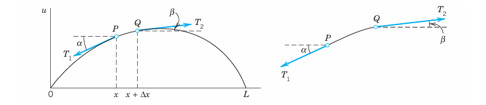
13.3.2 Derivation of the PDE of the Model (“Wave Equation”) from Forces
The model of the vibrating string will consist of a PDE (“wave equation”) and additional conditions. To obtain the PDE, we consider the forces acting on a small portion of the string (Figure 13.1). This method is typical of modeling in mechanics and elsewhere.
Since the string offers no resistance to bending, the tension is tangential to the curve of the string at each point. Let \(T_1\) and \(T_2\) be the tension at the endpoints \(P\) and \(Q\) of that portion. Since the points of the string move vertically, there is no motion in the horizontal direction. Hence the horizontal components of the tension must be constant. Using the notation shown in Figure 13.1, we thus obtain \[ T_1 \cos \alpha = T_2 \cos \beta = T = \text{const}. \tag{13.8}\]
In the vertical direction we have two forces, namely, the vertical components \(-T_1 \sin \alpha\) and \(T_2 \sin \beta\) of \(T_1\) and \(T_2\); here the minus sign appears because the component at \(P\) is directed downward. By Newton’s second law () the resultant of these two forces is equal to the mass \(\rho \Delta x\) of the portion times the acceleration \(\partial^2 u / \partial t^2\), evaluated at some point between \(x\) and \(x + \Delta x\); here \(\rho\) is the mass of the undeflected string per unit length, and \(\Delta x\) is the length of the portion of the undeflected string. (\(\Delta\) is generally used to denote small quantities; this has nothing to do with the Laplacian \(\nabla^2\), which is sometimes also denoted by \(\Delta\).) Hence \[ T_2 \sin \beta - T_1 \sin \alpha = \rho \Delta x \frac{\partial^2 u}{\partial t^2}. \]
Using (Equation 13.8), we can divide this by \(T\), obtaining \[ \frac{T_2 \sin \beta}{T_2 \cos \beta} - \frac{T_1 \sin \alpha}{T_1 \cos \alpha} = \tan \beta - \tan \alpha = \frac{\rho \Delta x}{T} \frac{\partial^2 u}{\partial t^2}. \tag{13.9}\]
Now \(\tan \alpha\) and \(\tan \beta\) are the slopes of the string at \(x\) and \(x + \Delta x\): \[ \tan \alpha = \left. \frac{\partial u}{\partial x} \right|_x \quad \text{and} \quad \tan \beta = \left. \frac{\partial u}{\partial x} \right|_{x+\Delta x}. \]
Here we have to write partial derivatives because \(u\) also depends on time \(t\). Dividing (Equation 13.9) by \(\Delta x\), we thus have \[ \frac{1}{\Delta x} \left[ \left. \frac{\partial u}{\partial x} \right|_{x+\Delta x} - \left. \frac{\partial u}{\partial x} \right|_x \right] = \frac{\rho}{T} \frac{\partial^2 u}{\partial t^2}. \]
If we let \(\Delta x\) approach zero, we obtain the linear PDE \[ \frac{\partial^2 u}{\partial t^2} = c^2 \frac{\partial^2 u}{\partial x^2}, \quad c^2 = \frac{T}{\rho}. \tag{13.10}\]
This is called the one-dimensional wave equation. We see that it is homogeneous and of the second order. The physical constant \(T/\rho\) is denoted by \(c^2\) (instead of \(c\)) to indicate that this constant is positive, a fact that will be essential to the form of the solutions. “One-dimensional” means that the equation involves only one space variable, \(x\). In Section 13.4 we shall complete setting up the model and then show how to solve it by a general method that is probably the most important one for PDEs in engineering mathematics.
13.4 Solution by Separating Variables. Use of Fourier Series
We continue our work from Section 13.3, where we modeled a vibrating string and obtained the one-dimensional wave equation. We now have to complete the model by adding additional conditions and then solving the resulting model.
The model of a vibrating elastic string (a violin string, for instance) consists of the one-dimensional wave equation \[ \frac{\partial^2 u}{\partial t^2} = c^2 \frac{\partial^2 u}{\partial x^2}, \quad c^2 = \frac{T}{\rho} \tag{13.11}\] for the unknown deflection \(u(x, t)\) of the string, a PDE that we have just obtained, and some additional conditions, which we shall now derive.
Since the string is fastened at the ends \(x = 0\) and \(x = L\) (see Section 13.3), we have the two boundary conditions \[ u(0, t) = 0 \quad \text{and} \quad u(L, t) = 0 \quad \text{for all } t \ge 0. \tag{13.12}\]
Furthermore, the form of the motion of the string will depend on its initial deflection (deflection at time \(t = 0\)), call it \(f(x)\), and on its initial velocity (velocity at \(t = 0\)), call it \(g(x)\). We thus have the two initial conditions \[ u(x, 0) = f(x) \quad \text{and} \quad u_t(x, 0) = g(x) \quad (0 \le x \le L) \tag{13.13}\] where \(u_t = \partial u / \partial t\). We now have to find a solution of the PDE (Equation 13.11) satisfying the conditions (Equation 13.12) and (Equation 13.13). This will be the solution of our problem. We shall do this in three steps, as follows.
- Step 1. By the “method of separating variables” or product method, setting \(u(x, t) = F(x)G(t)\), we obtain from (Equation 13.11) two ODEs, one for \(F(x)\) and the other one for \(G(t)\).
- Step 2. We determine solutions of these ODEs that satisfy the boundary conditions (Equation 13.12).
- Step 3. Finally, using Fourier series, we compose the solutions found in Step 2 to obtain a solution of (Equation 13.11) satisfying both (Equation 13.12) and (Equation 13.13), that is, the solution of our model of the vibrating string.
13.4.1 Step 1. Two ODEs from the Wave Equation (Equation 13.11)
In the method of separating variables, or product method, we determine solutions of the wave equation (Equation 13.11) of the form \[ u(x, t) = F(x)G(t) \tag{13.14}\] which are a product of two functions, each depending on only one of the variables \(x\) and \(t\). This is a powerful general method that has various applications in engineering mathematics, as we shall see in this chapter. Differentiating (Equation 13.14), we obtain \[ \frac{\partial^2 u}{\partial t^2} = F \ddot{G} \quad \text{and} \quad \frac{\partial^2 u}{\partial x^2} = F'' G \] where dots denote derivatives with respect to \(t\) and primes derivatives with respect to \(x\). By inserting this into the wave equation (Equation 13.11) we have \[ F \ddot{G} = c^2 F'' G. \] Dividing by \(c^2 F G\) and simplifying gives \[ \frac{\ddot{G}}{c^2 G} = \frac{F''}{F}. \] The variables are now separated, the left side depending only on \(t\) and the right side only on \(x\). Hence both sides must be constant because, if they were variable, then changing \(t\) or \(x\) would affect only one side, leaving the other unaltered. Thus, say, \[ \frac{\ddot{G}}{c^2 G} = \frac{F''}{F} = k. \] Multiplying by the denominators gives immediately two ordinary DEs \[ F'' - kF = 0 \tag{13.15}\] and \[ \ddot{G} - c^2 k G = 0. \tag{13.16}\] Here, the separation constant \(k\) is still arbitrary.
13.4.2 Step 2. Satisfying the Boundary Conditions (Equation 13.12)
We now determine solutions \(F\) and \(G\) of (Equation 13.15) and (Equation 13.16) so that \(u = FG\) satisfies the boundary conditions (Equation 13.12), that is, \[ u(0, t) = F(0)G(t) = 0 \quad \text{and} \quad u(L, t) = F(L)G(t) = 0 \quad \text{for all } t. \tag{13.17}\]
We first solve (Equation 13.15). If \(G \equiv 0\), then \(u = FG \equiv 0\), which is of no interest. Hence \(G ot\equiv 0\) and then by (Equation 13.17), \[ F(0) = 0 \quad \text{and} \quad F(L) = 0. \tag{13.18}\]
We show that \(k\) must be negative. For \(k = 0\) the general solution of (Equation 13.15) is \(F = ax + b\), and from (Equation 13.18) we obtain \(a = b = 0\), so that \(F \equiv 0\) and \(u = FG \equiv 0\), which is of no interest. For positive \(k = \mu^2\) a general solution of (Equation 13.15) is \[ F = A e^{\mu x} + B e^{-\mu x} \] and from (Equation 13.18) we obtain \(F \equiv 0\) as before. Hence we are left with the possibility of choosing \(k\) negative, say, \(k = -p^2\). Then (Equation 13.15) becomes \(F'' + p^2 F = 0\) and has as a general solution \[ F(x) = A \cos px + B \sin px. \] From this and (Equation 13.18) we have \[ F(0) = A = 0 \quad \text{and then} \quad F(L) = B \sin pL = 0. \] We must take \(B eq 0\) since otherwise \(F \equiv 0\). Hence \(\sin pL = 0\). Thus \[ pL = n\pi, \quad \text{so that} \quad p = \frac{n\pi}{L} \quad (n \text{ integer}). \tag{13.19}\]
Setting \(B = 1\), we thus obtain infinitely many solutions \(F(x) = F_n(x)\), where \[ F_n(x) = \sin \frac{n\pi}{L} x \quad (n = 1, 2, \dots). \tag{13.20}\] These solutions satisfy (Equation 13.18). (For negative integer \(n\) we obtain essentially the same solutions, except for a minus sign, because \(\sin(-\alpha) = -\sin\alpha\).)
We now solve (Equation 13.16) with \(k = -p^2 = -(n\pi/L)^2\) resulting from (Equation 13.19), that is, \[ \ddot{G}_n + \lambda_n^2 G_n = 0 \quad \text{where} \quad \lambda_n = cp = \frac{cn\pi}{L}. \tag{13.21}\]
A general solution is \[ G_n(t) = B_n \cos \lambda_n t + B_n^* \sin \lambda_n t. \] Hence solutions of (Equation 13.11) satisfying (Equation 13.12) are \(u_n(x, t) = F_n(x)G_n(t) = G_n(t)F_n(x)\), written out \[ u_n(x, t) = \left( B_n \cos \lambda_n t + B_n^* \sin \lambda_n t \right) \sin \frac{n\pi}{L} x \quad (n = 1, 2, \dots). \tag{13.22}\]
These functions are called the eigenfunctions, or characteristic functions, and the values \(\lambda_n = cn\pi/L\) are called the eigenvalues, or characteristic values, of the vibrating string. The set \(\{\lambda_1, \lambda_2, \dots\}\) is called the spectrum.
13.4.3 Discussion of Eigenfunctions
We see that each \(u_n\) represents a harmonic motion having the frequency \(\lambda_n / 2\pi = cn / 2L\) cycles per unit time. This motion is called the \(n\)th normal mode of the string. The first normal mode is known as the fundamental mode (\(n=1\)), and the others are known as overtones; musically they give the octave, octave plus fifth, etc. Since in (Equation 13.22) \[ \sin \frac{n\pi x}{L} = 0 \quad \text{at} \quad x = \frac{L}{n}, \frac{2L}{n}, \dots, \frac{n-1}{n} L, \] the \(n\)th normal mode has \(n-1\) nodes, that is, points of the string that do not move (in addition to the fixed endpoints); see Figure 13.2.
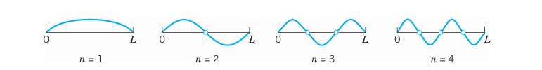
Figure 13.3 shows the second normal mode for various values of \(t\). At any instant the string has the form of a sine wave. When the left part of the string is moving down, the other half is moving up, and conversely. For the other modes the situation is similar.
Tuning is done by changing the tension \(T\). Our formula for the frequency \(\lambda_n / 2\pi = cn / 2L\) of \(u_n\) with \(c = \sqrt{T/\rho}\) see (3), 13.3 confirms that effect because it shows that the frequency is proportional to the tension. \(T\) cannot be increased indefinitely, but can you see what to do to get a string with a high fundamental mode? (Think of both \(L\) and \(\rho\).) Why is a violin smaller than a double-bass?
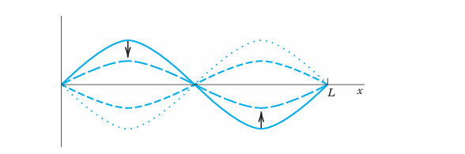
13.4.4 Step 3. Solution of the Entire Problem. Fourier Series
The eigenfunctions (Equation 13.22) satisfy the wave equation (Equation 13.11) and the boundary conditions (Equation 13.12) (string fixed at the ends). A single \(u_n\) will generally not satisfy the initial conditions (Equation 13.13). But since the wave equation (Equation 13.11) is linear and homogeneous, it follows from Fundamental Theorem 1 in Section 13.1 that the sum of finitely many solutions \(u_n\) is a solution of (Equation 13.11). To obtain a solution that also satisfies the initial conditions (Equation 13.13), we consider the infinite series (with \(\lambda_n = cn\pi / L\) as before) \[ u(x, t) = \sum_{n=1}^{\infty} u_n(x, t) = \sum_{n=1}^{\infty} \left( B_n \cos \lambda_n t + B_n^* \sin \lambda_n t \right) \sin \frac{n\pi}{L} x. \tag{13.23}\]
13.4.5 Satisfying Initial Condition (Equation 13.13) (Given Initial Displacement)
From (Equation 13.23) and the first condition in (Equation 13.13) we obtain \[ u(x, 0) = \sum_{n=1}^{\infty} B_n \sin \frac{n\pi}{L} x = f(x) \quad (0 \le x \le L). \tag{13.24}\] Hence we must choose the \(B_n\)’s so that \(u(x, 0)\) becomes the Fourier sine series of \(f(x)\). Thus, by (4) in , \[ B_n = \frac{2}{L} \int_{0}^{L} f(x) \sin \frac{n\pi}{L} x \, dx, \quad n = 1, 2, \dots \tag{13.25}\]
13.4.6 Satisfying Initial Condition (Equation 13.13) (Given Initial Velocity)
Similarly, by differentiating (Equation 13.23) with respect to \(t\) and using the second condition in (Equation 13.13), we obtain \[ \left. \frac{\partial u}{\partial t} \right|_{t=0} = \sum_{n=1}^{\infty} \left. \left( -B_n \lambda_n \sin \lambda_n t + B_n^* \lambda_n \cos \lambda_n t \right) \sin \frac{n\pi}{L} x \right|_{t=0} = \sum_{n=1}^{\infty} B_n^* \lambda_n \sin \frac{n\pi}{L} x = g(x). \] Hence we must choose the \(B_n^*\)’s so that for \(t=0\) the derivative \(\partial u / \partial t\) becomes the Fourier sine series of \(g(x)\). Thus, again by (4) in , \[ B_n^* \lambda_n = \frac{2}{L} \int_{0}^{L} g(x) \sin \frac{n\pi}{L} x \, dx. \] Since \(\lambda_n = cn\pi / L\), we obtain by division \[ B_n^* = \frac{2}{cn\pi} \int_{0}^{L} g(x) \sin \frac{n\pi}{L} x \, dx, \quad n = 1, 2, \dots \tag{13.26}\]
13.4.7 Result
Our discussion shows that \(u(x, t)\) given by (Equation 13.23) with coefficients (Equation 13.25) and (Equation 13.26) is a solution of (Equation 13.11) that satisfies all the conditions in (Equation 13.12) and (Equation 13.13), provided the series (Equation 13.23) converges and so do the series obtained by differentiating (Equation 13.23) twice termwise with respect to \(x\) and \(t\) and have the sums \(\partial^2 u / \partial x^2\) and \(\partial^2 u / \partial t^2\), respectively, which are continuous.
13.4.8 Solution (Equation 13.23) Established
According to our derivation, the solution (Equation 13.23) is at first a purely formal expression, but we shall now establish it. For the sake of simplicity we consider only the case when the initial velocity \(g(x)\) is identically zero. Then the \(B_n^*\) are zero, and (Equation 13.23) reduces to \[ u(x, t) = \sum_{n=1}^{\infty} B_n \cos \lambda_n t \sin \frac{n\pi}{L} x, \quad \lambda_n = \frac{cn\pi}{L}. \tag{13.27}\]
It is possible to sum this series, that is, to write the result in a closed or finite form. For this purpose we use the formula [see (11), ] \[ \cos \frac{cn\pi}{L} t \sin \frac{n\pi}{L} x = \frac{1}{2} \left[ \sin \frac{n\pi}{L} (x - ct) + \sin \frac{n\pi}{L} (x + ct) \right]. \] Consequently, we may write (Equation 13.27) in the form \[ u(x, t) = \frac{1}{2} \sum_{n=1}^{\infty} B_n \sin \frac{n\pi}{L} (x - ct) + \frac{1}{2} \sum_{n=1}^{\infty} B_n \sin \frac{n\pi}{L} (x + ct). \] These two series are those obtained by substituting \(x - ct\) and \(x + ct\), respectively, for the variable \(x\) in the Fourier sine series (Equation 13.24) for \(f(x)\). Thus \[ u(x, t) = \frac{1}{2} \left[ f^*(x - ct) + f^*(x + ct) \right] \tag{13.28}\] where \(f^*\) is the odd periodic extension of \(f\) with the period \(2L\) (Figure 13.4). Since the initial deflection \(f(x)\) is continuous on the interval \(0 \le x \le L\) and zero at the endpoints, it follows from (Equation 13.28) that \(u(x, t)\) is a continuous function of both variables \(x\) and \(t\) for all values of the variables. By differentiating (Equation 13.28) we see that \(u(x, t)\) is a solution of (Equation 13.11), provided \(f(x)\) is twice differentiable on the interval \(0 < x < L\), and has one-sided second derivatives at \(x = 0\) and \(x = L\), which are zero. Under these conditions \(u(x, t)\) is established as a solution of (Equation 13.11), satisfying (Equation 13.12) and (Equation 13.13) with \(g(x) = 0\).
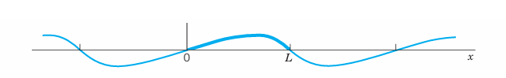
13.4.9 Generalized Solution
If \(f'(x)\) and \(f''(x)\) are merely piecewise continuous (see ), or if those one-sided derivatives are not zero, then for each \(t\) there will be finitely many values of \(x\) at which the second derivatives of \(u\) appearing in (Equation 13.11) do not exist. Except at these points the wave equation will still be satisfied. We may then regard \(u(x, t)\) as a “generalized solution”, as it is called, that is, as a solution in a broader sense. For instance, a triangular initial deflection as in Example 1 (below) leads to a generalized solution.
13.4.10 Physical Interpretation of the Solution (Equation 13.28)
The graph of \(f^*(x - ct)\) is obtained from the graph of \(f^*(x)\) by shifting the latter \(ct\) units to the right (Figure 13.5). This means that \(f^*(x - ct)\) (\(c > 0\)) represents a wave that is traveling to the right as \(t\) increases. Similarly, \(f^*(x + ct)\) represents a wave that is traveling to the left, and \(u(x, t)\) is the superposition of these two waves.
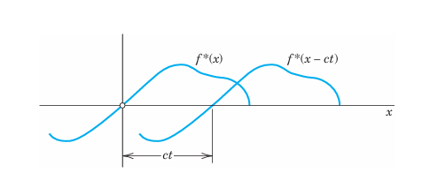
13.4.11 Vibrating String if the Initial Deflection Is Triangular
Find the solution of the wave equation (Equation 13.11) satisfying (Equation 13.12) and corresponding to the triangular initial deflection \[ f(x) = \begin{cases} \frac{2k}{L} x & \text{if } 0 \le x \le \frac{L}{2} \ \frac{2k}{L} (L - x) & \text{if } \frac{L}{2} \le x \le L \end{cases} \] and initial velocity zero. (Figure 13.6 shows \(f(x) = u(x, 0)\) at the top.)
Solution. Since \(g(x) = 0\), we have \(B_n^* = 0\) in (Equation 13.23), and from Example 4 in we see that the \(B_n\) are given by (5), . Thus (Equation 13.23) takes the form \[ u(x, t) = \frac{8k}{\pi^2} \left( \sin \frac{\pi}{L} x \cos \frac{\pi c}{L} t - \frac{1}{9} \sin \frac{3\pi}{L} x \cos \frac{3\pi c}{L} t + \frac{1}{25} \sin \frac{5\pi}{L} x \cos \frac{5\pi c}{L} t - \dots \right). \]
For graphing the solution we may use \(u(x, 0) = f(x)\) and the above interpretation of the two functions in the representation (Equation 13.28). This leads to the graph shown in Figure 13.6.
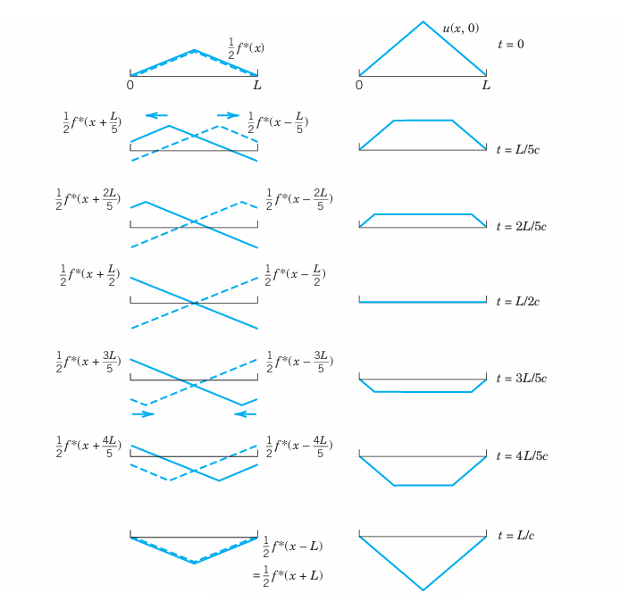
13.5 PROBLEM SET 12.3
1. Frequency. How does the frequency of the fundamental mode of the vibrating string depend on the length of the string? On the mass per unit length? What happens if we double the tension? Why is a contrabass larger than a violin?
2. Physical Assumptions. How would the motion of the string change if Assumption 3 were violated? Assumption 2? The second part of Assumption 1? The first part? Do we really need all these assumptions?
3. String of length \(\pi\). Write down the derivation in this section for length \(L = \pi\), to see the very substantial simplification of formulas in this case that may show ideas more clearly.
4. CAS PROJECT. Graphing Normal Modes. Write a program for graphing \(u_n\) with \(L = \pi\) and \(c^2\) of your choice similarly as in Figure 13.2. Apply the program to \(u_2, u_3, u_4\). Also graph these solutions as surfaces over the \(xt\)-plane. Explain the connection between these two kinds of graphs.
5–13 DEFLECTION OF THE STRING
Find \(u(x, t)\) for the string of length \(L=1\) and \(c^2=1\) when the initial velocity is zero and the initial deflection with small \(k\) (say, 0.01) is as follows. Sketch or graph \(u(x, t)\) as in Figure 13.6.
5. \(k \sin 3\pi x\)
6. \(k (\sin \pi x - \frac{1}{2} \sin 2\pi x)\)
7. \(k x (1 - x)\)
8. \(k x^2 (1 - x)\)
9.
0.1
0.5 1
--- -
4 4
-1
4 xHint: The initial displacement \(f(x)\) is triangular, rising from \((0,0)\) to \((1/4, k)\), then falling to \((1/2, 0)\) and zero elsewhere.
10.
1
-
4
1 3 1
- - -
4 4 4Hint: \(f(x)\) is zero on \(0 \le x \le 1/4\), rises from \((1/4, 0)\) to \((1/2, k)\), then falls to \((3/4, 0)\) and zero on \(3/4 \le x \le 1\).
11.
1
-
4
1 1 3 1
- - - -
4 2 4 412.
1
-
4
1 3 1
- - -
4 4 413. \(2x - 4x^2\) if \(0 \le x \le 1/2\), and \(0\) if \(1/2 \le x \le 1\).
14. Nonzero initial velocity. Find the deflection \(u(x, t)\) of the string of length \(L = \pi\) and \(c^2 = 1\) for zero initial displacement and “triangular” initial velocity \(u_t(x, 0) = 0.01x\) if \(0 < x < \pi/2\) and \(u_t(x, 0) = 0.01(\pi - x)\) if \(\pi/2 < x < \pi\). (Initial conditions with \(u_t(x, 0) eq 0\) are hard to realize experimentally.)
15–20 SEPARATION OF A FOURTH-ORDER PDE. VIBRATING BEAM
By the principles used in modeling the string it can be shown that small free vertical vibrations of a uniform elastic beam (Figure 13.7) are modeled by the fourth-order PDE \[ \frac{\partial^2 u}{\partial t^2} = -c^2 \frac{\partial^4 u}{\partial x^4} \tag{13.29}\] where \(c^2 = EI / \rho A\) (\(E = \text{Young's modulus of elasticity}\), \(I = \text{moment of inertia of the cross section with respect to the } y\text{-axis}\), \(\rho = \text{density}\), \(A = \text{cross-sectional area}\)).
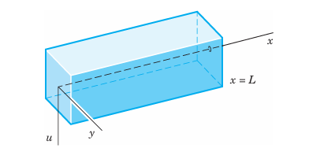
15. Substituting \(u = F(x)G(t)\) into (Equation 13.29), show that \[ \frac{\ddot{G}}{c^2 G} = -\frac{F^{(4)}}{F} = -\beta^4 = \text{const}, \] \[ F(x) = A \cos \beta x + B \sin \beta x + C \cosh \beta x + D \sinh \beta x, \] \[ G(t) = a \cos c \beta^2 t + b \sin c \beta^2 t. \]
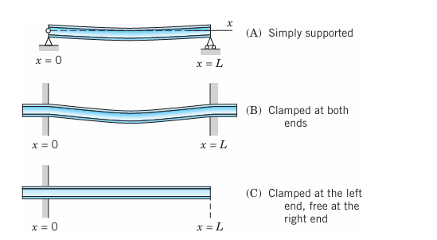
16. Simply supported beam in Figure 13.8(A). Find solutions \(u_n = F_n(x)G_n(t)\) of (Equation 13.29) corresponding to zero initial velocity and satisfying the boundary conditions \[ u(0, t) = 0, \quad u(L, t) = 0 \quad (\text{ends simply supported}) \] \[ u_{xx}(0, t) = 0, \quad u_{xx}(L, t) = 0 \quad (\text{zero bending moments at ends}). \]
17. Find the solution of (Equation 13.29) that satisfies the conditions in Prob. 16 as well as the initial condition \(u(x, 0) = f(x) = x(L - x)\).
18. Compare the results of Probs. 17 and 7. What is the basic difference between the frequencies of the normal modes of the vibrating string and the vibrating beam?
19. Clamped beam in Figure 13.8(B). What are the boundary conditions for the clamped beam in Figure 13.8(B)? Show that \(F\) in Prob. 15 satisfies these conditions if \(\beta L\) is a solution of the equation \[ \cosh \beta L \cos \beta L = 1. \tag{13.30}\] Determine approximate solutions of (Equation 13.30), for instance, graphically from the intersections of the curves of \(\cos \beta L\) and \(1 / \cosh \beta L\).
20. Clamped-free beam in Figure 13.8(C). If the beam is clamped at the left and free at the right (Figure 13.8(C)), the boundary conditions are \[ u(0, t) = 0, \quad u_x(0, t) = 0, \] \[ u_{xx}(L, t) = 0, \quad u_{xxx}(L, t) = 0. \] Show that \(F\) in Prob. 15 satisfies these conditions if \(\beta L\) is a solution of the equation \[ \cosh \beta L \cos \beta L = -1. \tag{13.31}\] Find approximate solutions of (Equation 13.31).
13.6 D’Alembert’s Solution of the Wave Equation. Characteristics
It is interesting that the solution (Equation 13.28), Section 13.4, of the wave equation \[ \frac{\partial^2 u}{\partial t^2} = c^2 \frac{\partial^2 u}{\partial x^2}, \quad c^2 = \frac{T}{\rho} \tag{13.32}\] can be immediately obtained by transforming (Equation 13.32) in a suitable way, namely, by introducing the new independent variables \[ v = x + ct, \quad w = x - ct. \tag{13.33}\] Then \(u\) becomes a function of \(v\) and \(w\). The derivatives in (Equation 13.32) can now be expressed in terms of derivatives with respect to \(v\) and \(w\) by the use of the chain rule in . Denoting partial derivatives by subscripts, we see from (Equation 13.33) that \(v_x = 1\) and \(w_x = 1\). For simplicity let us denote \(u(x, t)\), as a function of \(v\) and \(w\), by the same letter \(u\). Then \[ u_x = u_v v_x + u_w w_x = u_v + u_w. \] We now apply the chain rule to the right side of this equation. We assume that all the partial derivatives involved are continuous, so that \(u_{wv} = u_{vw}\). Since \(v_x = 1\) and \(w_x = 1\), we obtain \[ u_{xx} = (u_v + u_w)_x = (u_v + u_w)_v v_x + (u_v + u_w)_w w_x = u_{vv} + 2u_{vw} + u_{ww}. \] Transforming the other derivative in (Equation 13.32) by the same procedure, we find \[ u_{tt} = c^2 (u_{vv} - 2u_{vw} + u_{ww}). \] By inserting these two results in (Equation 13.32) we get (see footnote 2 in ) \[ \frac{\partial^2 u}{\partial v \partial w} = 0. \tag{13.34}\] The point of the present method is that (Equation 13.34) can be readily solved by two successive integrations, first with respect to \(w\) and then with respect to \(v\). This gives \[ \frac{\partial u}{\partial v} = h(v) \quad \text{and} \quad u = \int h(v) \, dv + \psi(w). \] Here \(h(v)\) and \(\psi(w)\) are arbitrary functions of \(v\) and \(w\), respectively. Since the integral is a function of \(v\), say, \(\phi(v)\), the solution is of the form \(u = \phi(v) + \psi(w)\). In terms of \(x\) and \(t\), by (Equation 13.33), we thus have \[ u(x, t) = \phi(x + ct) + \psi(x - ct). \tag{13.35}\] This is known as d’Alembert’s solution1 of the wave equation (Equation 13.32).
Its derivation was much more elegant than the method in Section 13.4, but d’Alembert’s method is special, whereas the use of Fourier series applies to various equations, as we shall see.
13.6.1 D’Alembert’s Solution Satisfying the Initial Conditions
\[ u(x, 0) = f(x) \quad \text{and} \quad u_t(x, 0) = g(x). \tag{13.36}\] These are the same as (3) in Section 13.4. By differentiating (Equation 13.35) we have \[ u_t(x, t) = c \phi'(x + ct) - c \psi'(x - ct) \tag{13.37}\] where primes denote derivatives with respect to the entire arguments \(x + ct\) and \(x - ct\), respectively, and the minus sign comes from the chain rule. From (Equation 13.35)–(Equation 13.37) we have \[ u(x, 0) = \phi(x) + \psi(x) = f(x), \tag{13.38}\] \[ u_t(x, 0) = c \phi'(x) - c \psi'(x) = g(x). \tag{13.39}\]
Dividing (Equation 13.39) by \(c\) and integrating with respect to \(x\), we obtain \[ \phi(x) - \psi(x) = \frac{1}{c} \int_{x_0}^{x} g(s) \, ds + K(x_0), \quad K(x_0) = \phi(x_0) - \psi(x_0). \tag{13.40}\]
If we add this to (Equation 13.38), then \(\psi\) drops out and division by 2 gives \[ \phi(x) = \frac{1}{2} f(x) + \frac{1}{2c} \int_{x_0}^{x} g(s) \, ds + \frac{1}{2} K(x_0). \tag{13.41}\] Similarly, subtraction of (Equation 13.40) from (Equation 13.38) and division by 2 gives \[ \psi(x) = \frac{1}{2} f(x) - \frac{1}{2c} \int_{x_0}^{x} g(s) \, ds - \frac{1}{2} K(x_0). \tag{13.42}\]
In (Equation 13.41) we replace \(x\) by \(x + ct\); we then get an integral from \(x_0\) to \(x + ct\). In (Equation 13.42) we replace \(x\) by \(x - ct\) and get minus an integral from \(x_0\) to \(x - ct\) or plus an integral from \(x - ct\) to \(x_0\). Hence addition of \(\phi(x + ct)\) and \(\psi(x - ct)\) gives \(u(x, t)\) see ( 13.35 in the form \[ u(x, t) = \frac{1}{2} \left[ f(x + ct) + f(x - ct) \right] + \frac{1}{2c} \int_{x - ct}^{x + ct} g(s) \, ds. \tag{13.43}\]
If the initial velocity is zero, we see that this reduces to \[ u(x, t) = \frac{1}{2} \left[ f(x + ct) + f(x - ct) \right], \tag{13.44}\] in agreement with (Equation 13.28) in Section 13.4. You may show that because of the boundary conditions (2) in that section the function \(f\) must be odd and must have the period \(2L\).
Our result shows that the two initial conditions the functions \(f(x)\) and \(g(x)\) in ( 13.36 determine the solution uniquely.
The solution of the wave equation by the Laplace transform method will be shown in Section 13.18.
13.6.2 Characteristics. Types and Normal Forms of PDEs
The idea of d’Alembert’s solution is just a special instance of the method of characteristics. This concerns PDEs of the form \[ A u_{xx} + 2B u_{xy} + C u_{yy} = F(x, y, u, u_x, u_y) \tag{13.45}\] (as well as PDEs in more than two variables). Equation (Equation 13.45) is called quasilinear because it is linear in the highest derivatives (but may be arbitrary otherwise). There are three types of PDEs (Equation 13.45), depending on the discriminant \(AC - B^2\), as follows.
| Type | Defining Condition | Example in Section 13.1 |
|---|---|---|
| Hyperbolic | \(AC - B^2 < 0\) | Wave equation (Equation 13.1) |
| Parabolic | \(AC - B^2 = 0\) | Heat equation (Equation 13.2) |
| Elliptic | \(AC - B^2 > 0\) | Laplace equation (Equation 13.3) |
Note that (1) and (2) in Section 13.1 involve \(t\), but to have \(y\) as in (Equation 13.45), we set \(y = ct\) in (1), obtaining \(u_{tt} - c^2 u_{xx} = c^2 (u_{yy} - u_{xx}) = 0\). And in (2) we set \(y = c^2 t\), so that \(u_t - c^2 u_{xx} = c^2 (u_y - u_{xx})\).
\(A\), \(B\), \(C\) may be functions of \(x, y\), so that a PDE may be of mixed type, that is, of different type in different regions of the \(xy\)-plane. An important mixed-type PDE is the Tricomi equation (see Prob. 20).
13.6.3 Transformation of (Equation 13.45) to Normal Form
The normal forms of (Equation 13.45) and the corresponding transformations depend on the type of the PDE. They are obtained by solving the characteristic equation of (Equation 13.45), which is the ODE \[ A (y')^2 - 2B y' + C = 0 \tag{13.46}\] where \(y' = dy/dx\) (note \(-2B\), not \(+2B\)). The solutions of (Equation 13.46) are called the characteristics of (Equation 13.45), and we write them in the form \(\Phi(x, y) = \text{const}\) and \(\Psi(x, y) = \text{const}\). Then the transformations giving new variables \(v, w\) instead of \(x, y\) and the normal forms of (Equation 13.45) are as follows.
| Type | New Variables | Normal Form |
|---|---|---|
| Hyperbolic | \(v = \Phi\), \(w = \Psi\) | \(u_{vw} = F_1\) |
| Parabolic | \(v = x\), \(w = \Phi\) (or \(\Psi\)) | \(u_{ww} = F_2\) |
| Elliptic | \(v = \frac{1}{2}(\Phi + \Psi)\), \(w = \frac{1}{2i}(\Phi - \Psi)\) | \(u_{vv} + u_{ww} = F_3\) |
Here, \(\Phi = \Phi(x, y)\), \(\Psi = \Psi(x, y)\), \(F_1 = F_1(v, w, u, u_v, u_w)\), etc., and we denote \(u\) as function of \(v, w\) again by \(u\), for simplicity. We see that the normal form of a hyperbolic PDE is as in d’Alembert’s solution. In the parabolic case we get just one family of solutions \(\Phi = \Psi\). In the elliptic case, \(i = \sqrt{-1}\), and the characteristics are complex and are of minor interest. For derivation, see Ref. [GenRef3] in .
13.6.4 D’Alembert’s Solution Obtained Systematically
The theory of characteristics gives d’Alembert’s solution in a systematic fashion. To see this, we write the wave equation \(u_{tt} - c^2 u_{xx} = 0\) in the form (Equation 13.45) by setting \(y = ct\). By the chain rule, \(u_t = u_y y_t = c u_y\) and \(u_{tt} = c^2 u_{yy}\). Division by \(c^2\) gives \(u_{yy} - u_{xx} = 0\), as stated before. Hence the characteristic equation is \((y')^2 - 1 = (y' + 1)(y' - 1) = 0\). The two families of solutions (characteristics) are \(\Phi(x, y) = y + x = \text{const}\) and \(\Psi(x, y) = y - x = \text{const}\). This gives the new variables \(v = \Phi = y + x = ct + x\) and \(w = \Psi = y - x = ct - x\) and d’Alembert’s solution \(u = \phi(x + ct) + \psi(x - ct)\).
13.7 PROBLEM SET 12.4
1. Show that \(c\) is the speed of each of the two waves given by (Equation 13.35).
2. Show that, because of the boundary conditions (2), Section 13.4, the function \(f\) in (Equation 13.44) of this section must be odd and of period \(2L\).
3. If a steel wire 2 m in length weighs 0.9 nt (about 0.20 lb) and is stretched by a tensile force of 300 nt (about 67.4 lb), what is the corresponding speed of transverse waves?
4. What are the frequencies of the eigenfunctions in Prob. 3?
5–8 GRAPHING SOLUTIONS
Using (Equation 13.44) sketch or graph a figure (similar to Figure 13.6 in Section 13.4) of the deflection \(u(x, t)\) of a vibrating string (length \(L = 1\), ends fixed, \(c = 1\)) starting with initial velocity 0 and initial deflection (\(k\) small, say, \(k = 0.01\)).
5. \(f(x) = k \sin \pi x\)
6. \(f(x) = k(1 - \cos \pi x)\)
7. \(f(x) = k \sin 2\pi x\)
8. \(f(x) = k x (1 - x)\)
9–18 NORMAL FORMS
Find the type, transform to normal form, and solve. Show your work in detail.
9. \(u_{xx} + 4u_{yy} = 0\)
10. \(u_{xx} - 16u_{yy} = 0\)
11. \(u_{xx} + 2u_{xy} + u_{yy} = 0\)
12. \(u_{xx} - 2u_{xy} + u_{yy} = 0\)
13. \(u_{xx} + 5u_{xy} + 4u_{yy} = 0\)
14. \(u_{xy} - y u_{yy} = 0\)
15. \(x u_{xx} - y u_{xy} = 0\)
16. \(u_{xx} + 2u_{xy} + 10u_{yy} = 0\)
17. \(u_{xx} - 4u_{xy} + 5u_{yy} = 0\)
18. \(u_{xx} - 6u_{xy} + 9u_{yy} = 0\)
19. Longitudinal Vibrations of an Elastic Bar or Rod. These vibrations in the direction of the \(x\)-axis are modeled by the wave equation \(u_{tt} = c^2 u_{xx}\), \(c^2 = E/\rho\) (see Tolstov [C9], p. 275). If the rod is fastened at one end, \(x=0\), and free at the other, \(x=L\), we have \(u(0, t) = 0\) and \(u_x(L, t) = 0\). Show that the motion corresponding to initial displacement \(u(x, 0) = f(x)\) and initial velocity zero is \[ u(x, t) = \sum_{n=0}^{\infty} A_n \sin p_n x \cos p_n ct, \] where \[ A_n = \frac{2}{L} \int_{0}^{L} f(x) \sin p_n x \, dx, \quad p_n = \frac{(2n+1)\pi}{2L}. \]
20. Tricomi and Airy equations. Show that the Tricomi equation \(y u_{xx} + u_{yy} = 0\) is of mixed type. Obtain the Airy equation \(G'' - y G = 0\) from the Tricomi equation by separation. (For solutions, see p. 446 of Ref. [GenRef1] listed in .)
13.8 Modeling: Heat Flow from a Body in Space. Heat Equation
After the wave equation (Section 13.3) we now derive and discuss the next “big” PDE, the heat equation, which governs the temperature \(u\) in a body in space. We obtain this model of temperature distribution under the following.
13.8.1 Physical Assumptions
- The specific heat \(\sigma\) and the density \(\rho\) of the material of the body are constant. No heat is produced or disappears in the body.
- Experiments show that, in a body, heat flows in the direction of decreasing temperature, and the rate of flow is proportional to the gradient (cf. ) of the temperature; that is, the velocity \(\mathbf{v}\) of the heat flow in the body is of the form \[ \mathbf{v} = -K \operatorname{grad} u \tag{13.47}\] where \(u(x, y, z, t)\) is the temperature at a point \((x, y, z)\) and time \(t\).
- The thermal conductivity \(K\) is constant, as is the case for homogeneous material and nonextreme temperatures.
Under these assumptions we can model heat flow as follows.
Let \(T\) be a region in the body bounded by a surface \(S\) with outer unit normal vector \(\mathbf{n}\) such that the divergence theorem () applies. Then \[ \mathbf{v} \cdot \mathbf{n} \] is the component of \(\mathbf{v}\) in the direction of \(\mathbf{n}\). Hence \(|\mathbf{v} \cdot \mathbf{n}| \Delta A\) is the amount of heat leaving \(T\) (if \(\mathbf{v} \cdot \mathbf{n} > 0\) at some point \(P\)) or entering \(T\) (if \(\mathbf{v} \cdot \mathbf{n} < 0\) at \(P\)) per unit time at some point \(P\) of \(S\) through a small portion \(\Delta S\) of \(S\) of area \(\Delta A\). Hence the total amount of heat that flows across \(S\) from \(T\) is given by the surface integral \[ \iint_S \mathbf{v} \cdot \mathbf{n} \, dA. \]
Note that, so far, this parallels the derivation on fluid flow in Example 1 of . Using Gauss’s theorem (), we now convert our surface integral into a volume integral over the region \(T\). Because of (Equation 13.47) this gives [use (3) in ] \[ \iint_S \mathbf{v} \cdot \mathbf{n} \, dA = -K \iint_S (\operatorname{grad} u) \cdot \mathbf{n} \, dA = -K \iiint_T \operatorname{div} (\operatorname{grad} u) \, dx \, dy \, dz \] \[ = -K \iiint_T \nabla^2 u \, dx \, dy \, dz. \tag{13.48}\]
Here, \[ \nabla^2 u = \frac{\partial^2 u}{\partial x^2} + \frac{\partial^2 u}{\partial y^2} + \frac{\partial^2 u}{\partial z^2} \] is the Laplacian of \(u\).
On the other hand, the total amount of heat in \(T\) is \[ H = \iiint_T \sigma \rho u \, dx \, dy \, dz \] with \(\sigma\) and \(\rho\) as before. Hence the time rate of decrease of \(H\) is \[ -\frac{\partial H}{\partial t} = -\iiint_T \sigma \rho \frac{\partial u}{\partial t} \, dx \, dy \, dz. \]
This must be equal to the amount of heat leaving \(T\) because no heat is produced or disappears in the body. From (Equation 13.48) we thus obtain \[ -\iiint_T \sigma \rho \frac{\partial u}{\partial t} \, dx \, dy \, dz = -K \iiint_T \nabla^2 u \, dx \, dy \, dz \] or (divide by \(-\sigma \rho\)) \[ \iiint_T \left( \frac{\partial u}{\partial t} - c^2 \nabla^2 u \right) \, dx \, dy \, dz = 0, \quad c^2 = \frac{K}{\sigma \rho}. \]
Since this holds for any region \(T\) in the body, the integrand (if continuous) must be zero everywhere. That is, \[ \frac{\partial u}{\partial t} = c^2 \nabla^2 u, \quad c^2 = \frac{K}{\rho \sigma}. \tag{13.49}\]
This is the heat equation, the fundamental PDE modeling heat flow. It gives the temperature \(u(x, y, z, t)\) in a body of homogeneous material in space. The constant \(c^2\) is the thermal diffusivity. \(K\) is the thermal conductivity, \(\sigma\) the specific heat, and \(\rho\) the density of the material of the body. \(\nabla^2 u\) is the Laplacian of \(u\) and, with respect to the Cartesian coordinates \(x, y, z\), is \[ \nabla^2 u = \frac{\partial^2 u}{\partial x^2} + \frac{\partial^2 u}{\partial y^2} + \frac{\partial^2 u}{\partial z^2}. \]
The heat equation is also called the diffusion equation because it also models chemical diffusion processes of one substance or gas into another.
13.9 Heat Equation: Solution by Fourier Series. Steady Two-Dimensional Heat Problems. Dirichlet Problem
We want to solve the (one-dimensional) heat equation just developed in Section 13.8 and give several applications. This is followed much later in this section by an extension of the heat equation to two dimensions.
As an important application of the heat equation, let us first consider the temperature in a long thin metal bar or wire of constant cross section and homogeneous material, which is oriented along the \(x\)-axis (Figure 13.9) and is perfectly insulated laterally, so that heat flows in the \(x\)-direction only. Then besides time \(t\), \(u\) depends only on \(x\), so that the Laplacian reduces to \(u_{xx} = \partial^2 u / \partial x^2\), and the heat equation becomes the one-dimensional heat equation \[ \frac{\partial u}{\partial t} = c^2 \frac{\partial^2 u}{\partial x^2}. \tag{13.50}\]
This PDE seems to differ only very little from the wave equation, which has a term \(u_{tt}\) instead of \(u_t\), but we shall see that this will make the solutions of (Equation 13.50) behave quite differently from those of the wave equation.
We shall solve (Equation 13.50) for some important types of boundary and initial conditions. We begin with the case in which the ends \(x = 0\) and \(x = L\) of the bar are kept at temperature zero, so that we have the boundary conditions \[ u(0, t) = 0, \quad u(L, t) = 0 \quad \text{for all } t \ge 0. \tag{13.51}\]
Furthermore, the initial temperature in the bar at time \(t = 0\) is given, say, \(f(x)\), so that we have the initial condition \[ u(x, 0) = f(x) \quad [f(x) \text{ given}]. \tag{13.52}\]
Here we must have \(f(0) = 0\) and \(f(L) = 0\) because of (Equation 13.51).
We shall determine a solution \(u(x, t)\) of (Equation 13.50) satisfying (Equation 13.51) and (Equation 13.52)—one initial condition will be enough, as opposed to two initial conditions for the wave equation. Technically, our method will parallel that for the wave equation in Section 13.4: a separation of variables, followed by the use of Fourier series. You may find a step-by-step comparison worthwhile.
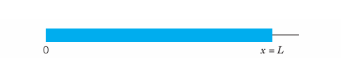
13.9.1 Step 1. Two ODEs from the Heat Equation (Equation 13.50)
Substitution of a product \(u(x, t) = F(x)G(t)\) into (Equation 13.50) gives \(F \dot{G} = c^2 F'' G\) with \(\dot{G} = dG/dt\) and \(F'' = d^2F/dx^2\). To separate the variables, we divide by \(c^2FG\), obtaining \[ \frac{\dot{G}}{c^2 G} = \frac{F''}{F}. \tag{13.53}\]
The left side depends only on \(t\) and the right side only on \(x\), so that both sides must equal a constant \(k\) (as in Section 13.4). You may show that for \(k = 0\) or \(k > 0\) the only solution \(u = FG\) satisfying (Equation 13.51) is \(u \equiv 0\). For negative \(k = -p^2\) we have from (Equation 13.53) \[ \frac{\dot{G}}{c^2 G} = \frac{F''}{F} = -p^2. \]
Multiplication by the denominators immediately gives the two ODEs \[ F'' + p^2 F = 0 \tag{13.54}\] and \[ \dot{G} + c^2 p^2 G = 0. \tag{13.55}\]
13.9.2 Step 2. Satisfying the Boundary Conditions (Equation 13.51)
We first solve (Equation 13.54). A general solution is \[ F(x) = A \cos px + B \sin px. \tag{13.56}\]
From the boundary conditions (Equation 13.51) it follows that \[ u(0, t) = F(0)G(t) = 0 \quad \text{and} \quad u(L, t) = F(L)G(t) = 0. \]
Since \(G \equiv 0\) would give \(u \equiv 0\), we require \(F(0) = 0\), \(F(L) = 0\) and get \(F(0) = A = 0\) by (Equation 13.56) and then \(F(L) = B \sin pL = 0\), with \(B eq 0\) (to avoid \(F \equiv 0\)); thus, \[ \sin pL = 0, \quad \text{hence} \quad p = \frac{n\pi}{L}, \quad n = 1, 2, \dots \]
Setting \(B = 1\), we thus obtain the following solutions of (Equation 13.54) satisfying (Equation 13.51): \[ F_n(x) = \sin \frac{n\pi x}{L}, \quad n = 1, 2, \dots \]
(As in Section 13.4, we need not consider negative integer values of \(n\).)
All this was literally the same as in Section 13.4. From now on it differs since (Equation 13.55) differs from (6) in Section 13.4. We now solve (Equation 13.55). For \(p = n\pi / L\), as just obtained, (Equation 13.55) becomes \[ \dot{G}_n + \lambda_n^2 G_n = 0 \quad \text{where} \quad \lambda_n = \frac{cn\pi}{L}. \]
It has the general solution \[ G_n(t) = B_n e^{-\lambda_n^2 t}, \quad n = 1, 2, \dots \] where \(B_n\) is a constant. Hence the functions \[ u_n(x, t) = F_n(x)G_n(t) = B_n \sin \frac{n\pi x}{L} e^{-\lambda_n^2 t} \quad (n = 1, 2, \dots) \tag{13.57}\] are solutions of the heat equation (Equation 13.50), satisfying (Equation 13.51). These are the eigenfunctions of the problem, corresponding to the eigenvalues \(\lambda_n = cn\pi / L\).
13.9.3 Step 3. Solution of the Entire Problem. Fourier Series
So far we have solutions (Equation 13.57) satisfying the boundary conditions (Equation 13.51). To obtain a solution that also satisfies the initial condition (Equation 13.52), we consider a series of these eigenfunctions, \[ u(x, t) = \sum_{n=1}^{\infty} u_n(x, t) = \sum_{n=1}^{\infty} B_n \sin \frac{n\pi x}{L} e^{-\lambda_n^2 t} \quad \left(\lambda_n = \frac{cn\pi}{L}\right). \tag{13.58}\]
From this and (Equation 13.52) we have \[ u(x, 0) = \sum_{n=1}^{\infty} B_n \sin \frac{n\pi x}{L} = f(x). \]
Ranked for (Equation 13.58) to satisfy (Equation 13.52), the \(B_n\)’s must be the coefficients of the Fourier sine series of \(f(x)\), as given by (4) in ; thus \[ B_n = \frac{2}{L} \int_0^L f(x) \sin \frac{n\pi x}{L} \, dx \quad (n = 1, 2, \dots). \tag{13.59}\]
The solution of our problem can be established, assuming that \(f(x)\) is piecewise continuous on the interval \(0 \le x \le L\) and has one-sided derivatives at all interior points of that interval; that is, under these assumptions the series (Equation 13.58) with coefficients (Equation 13.59) is the solution of our physical problem. A proof requires knowledge of uniform convergence and will be given at a later occasion ().
Because of the exponential factor, all the terms in (Equation 13.58) approach zero as \(t\) approaches infinity. The rate of decay increases with \(n\).
13.9.4 Sinusoidal Initial Temperature
Find the temperature \(u(x, t)\) in a laterally insulated copper bar 80 cm long if the initial temperature is \(100 \sin(\pi x / 80)^\circ\text{C}\) and the ends are kept at \(0^\circ\text{C}\). How long will it take for the maximum temperature in the bar to drop to \(50^\circ\text{C}\)? First guess, then calculate. Physical data for copper: density \(8.92 \text{ g/cm}^3\), specific heat \(0.092 \text{ cal}/(\text{g }^\circ\text{C})\), thermal conductivity \(0.95 \text{ cal}/(\text{cm sec }^\circ\text{C})\).
Solution. The initial condition gives \[ u(x, 0) = \sum_{n=1}^{\infty} B_n \sin \frac{n\pi x}{80} = f(x) = 100 \sin \frac{\pi x}{80}. \]
Hence, by inspection, we get \(B_1 = 100, B_2 = B_3 = \dots = 0\). In (Equation 13.58) we need \(\lambda_1^2 = c^2\pi^2 / L^2\), where \[ c^2 = \frac{K}{\sigma \rho} = \frac{0.95}{0.092 \times 8.92} = 1.158 \text{ [cm}^2/\text{sec]}. \] Hence we obtain \[ \lambda_1^2 = 1.158 \times \frac{9.870}{80^2} = 0.001785 \text{ [sec}^{-1}\text{]}. \]
The solution (Equation 13.58) is \[ u(x, t) = 100 \sin \frac{\pi x}{80} e^{-0.001785t}. \]
Also, \(100 e^{-0.001785t} = 50\) when \(t = (\ln 0.5) / (-0.001785) = 388 \text{ [sec]} \approx 6.5 \text{ [min]}\). Does your guess, or at least its order of magnitude, agree with this result?
13.9.5 Speed of Decay
Solve the problem in Example 1 when the initial temperature is \(100 \sin(3\pi x / 80)^\circ\text{C}\) and the other data are as before.
Solution. In (Equation 13.58), instead of \(n = 1\) we now have \(n = 3\), and \(\lambda_3^2 = 9\lambda_1^2 = 9 \times 0.001785 = 0.01607\), so that the solution now is \[ u(x, t) = 100 \sin \frac{3\pi x}{80} e^{-0.01607t}. \]
Hence the maximum temperature drops to \(50^\circ\text{C}\) in \(t = (\ln 0.5) / (-0.01607) \approx 43 \text{ [sec]}\), which is much faster (9 times as fast as in Example 1; why?).
Had we chosen a bigger \(n\), the decay would have been still faster, and in a sum or series of such terms, each term has its own rate of decay, and terms with large \(n\) are practically 0 after a very short time. Our next example is of this type, and the curve in Figure 13.10 corresponding to \(t = 0.5\) looks almost like a sine curve; that is, it is practically the graph of the first term of the solution.
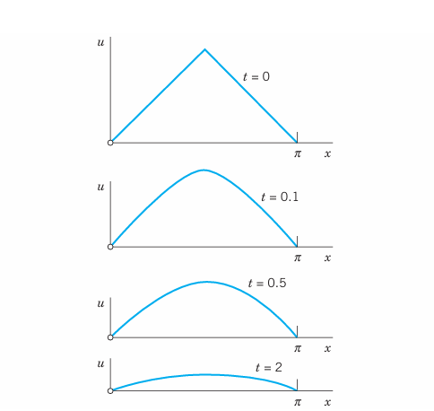
13.9.6 “Triangular” Initial Temperature in a Bar
Find the temperature in a laterally insulated bar of length \(L\) whose ends are kept at temperature 0, assuming that the initial temperature is \[ f(x) = \begin{cases} x & \text{if } 0 \le x \le L/2 \ L - x & \text{if } L/2 \le x \le L \end{cases} \] (The uppermost part of Figure 13.10 shows this function for the special \(L = \pi\).)
Solution. From (Equation 13.59) we get \[ B_n = \frac{2}{L} \left[ \int_0^{L/2} x \sin \frac{n\pi x}{L} \, dx + \int_{L/2}^L (L-x) \sin \frac{n\pi x}{L} \, dx \right]. \]
Integration gives \(B_n = 0\) if \(n\) is even, \[ B_n = \frac{4L}{n^2\pi^2} \quad (n = 1, 5, 9, \dots) \quad \text{and} \quad B_n = -\frac{4L}{n^2\pi^2} \quad (n = 3, 7, 11, \dots) \] (see also Example 4 in with \(k = L/2\)). Hence the solution is \[ u(x, t) = \frac{4L}{\pi^2} \left[ \sin \frac{\pi x}{L} \exp\left(-\left(\frac{c\pi}{L}\right)^2 t\right) - \frac{1}{9} \sin \frac{3\pi x}{L} \exp\left(-\left(\frac{3c\pi}{L}\right)^2 t\right) + \frac{1}{25} \sin \frac{5\pi x}{L} \exp\left(-\left(\frac{5c\pi}{L}\right)^2 t\right) - \dots \right]. \]
Figure 13.10 shows that the temperature decreases with increasing \(t\), because of the heat loss due to the cooling of the ends. Compare Figure 13.10 and Figure 13.6 in Section 13.4 and comment.
13.9.7 Bar with Insulated Ends. Eigenvalue 0
Find a solution formula of (Equation 13.50), (Equation 13.52) with (Equation 13.51) replaced by the condition that both ends of the bar are insulated.
Solution. Physical experiments show that the rate of heat flow is proportional to the gradient of the temperature. Hence if the ends \(x=0\) and \(x=L\) of the bar are insulated, so that no heat can flow through the ends, we have \(\operatorname{grad} u = u_x = \partial u / \partial x\) and the boundary conditions \[ u_x(0, t) = 0, \quad u_x(L, t) = 0 \quad \text{for all } t. \tag{13.60}\]
Since \(u(x, t) = F(x)G(t)\), this gives \(u_x(0, t) = F'(0)G(t) = 0\) and \(u_x(L, t) = F'(L)G(t) = 0\). Differentiating (Equation 13.56), we have \(F'(x) = -Ap \sin px + Bp \cos px\), so that \[ F'(0) = Bp = 0 \quad \text{and then} \quad F'(L) = -Ap \sin pL = 0. \]
The second of these conditions gives \(p = p_n = n\pi / L\) (\(n = 0, 1, 2, \dots\)). From this and (Equation 13.56) with \(A = 1\) and \(B = 0\) we get \(F_n(x) = \cos(n\pi x / L)\) (\(n = 0, 1, 2, \dots\)). With \(G\) as before, this yields the eigenfunctions \[ u_n(x, t) = F_n(x)G_n(t) = A_n \cos \frac{n\pi x}{L} e^{-\lambda_n^2 t} \quad (n = 0, 1, \dots) \tag{13.61}\] corresponding to the eigenvalues \(\lambda_n = cn\pi / L\). The latter are as before, but we now have the additional eigenvalue \(\lambda_0 = 0\) and eigenfunction \(u_0 = \text{const}\), which is the solution of the problem if the initial temperature \(f(x)\) is constant. This shows the remarkable fact that a separation constant can very well be zero, and zero can be an eigenvalue.
Furthermore, whereas (Equation 13.57) gave a Fourier sine series, we now get from (Equation 13.61) a Fourier cosine series \[ u(x, t) = \sum_{n=0}^{\infty} u_n(x, t) = A_0 + \sum_{n=1}^{\infty} A_n \cos \frac{n\pi x}{L} e^{-\lambda_n^2 t}. \tag{13.62}\]
Its coefficients result from the initial condition (Equation 13.52), \[ u(x, 0) = \sum_{n=0}^{\infty} A_n \cos \frac{n\pi x}{L} = f(x), \] in the form of (2) in , that is, \[ A_0 = \frac{1}{L} \int_0^L f(x) \, dx, \quad A_n = \frac{2}{L} \int_0^L f(x) \cos \frac{n\pi x}{L} \, dx \quad (n = 1, 2, \dots). \tag{13.63}\]
13.9.8 “Triangular” Initial Temperature in a Bar with Insulated Ends
Find the temperature in the bar in Example 3, assuming that the ends are insulated (instead of being kept at temperature 0).
Solution. For the triangular initial temperature, (Equation 13.63) gives \(A_0 = L/4\) and (see also Example 4 in with \(k = L/2\)) \[ A_n = \frac{2}{L} \left[ \int_0^{L/2} x \cos \frac{n\pi x}{L} \, dx + \int_{L/2}^L (L-x) \cos \frac{n\pi x}{L} \, dx \right] = \frac{2L}{n^2\pi^2} \left( 2 \cos \frac{n\pi}{2} - \cos n\pi - 1 \right). \]
Hence the solution (Equation 13.62) is \[ u(x, t) = \frac{L}{4} - \frac{8L}{\pi^2} \left[ \frac{1}{2^2} \cos \frac{2\pi x}{L} \exp\left(-\left(\frac{2c\pi}{L}\right)^2 t\right) + \frac{1}{6^2} \cos \frac{6\pi x}{L} \exp\left(-\left(\frac{6c\pi}{L}\right)^2 t\right) + \dots \right]. \]
We see that the terms decrease with increasing \(t\), and \(u \to L/4\) as \(t \to \infty\); this is the mean value of the initial temperature. This is plausible because no heat can escape from this totally insulated bar. In contrast, the cooling of the ends in Example 3 led to heat loss and \(u \to 0\), the temperature at which the ends were kept.
13.9.9 Steady Two-Dimensional Heat Problems. Laplace’s Equation
We shall now extend our discussion from one to two space dimensions and consider the two-dimensional heat equation \[ \frac{\partial u}{\partial t} = c^2 \nabla^2 u = c^2 \left( \frac{\partial^2 u}{\partial x^2} + \frac{\partial^2 u}{\partial y^2} \right) \] for steady (that is, time-independent) problems. Then \(\partial u / \partial t = 0\) and the heat equation reduces to Laplace’s equation \[ \nabla^2 u = \frac{\partial^2 u}{\partial x^2} + \frac{\partial^2 u}{\partial y^2} = 0 \tag{13.64}\] (which has already occurred in and will be considered further in Section 13.13 to Section 13.18). A heat problem then consists of this PDE to be considered in some region \(R\) of the \(xy\)-plane and a given boundary condition on the boundary curve \(C\) of \(R\). This is a boundary value problem (BVP). One calls it:
- First BVP or Dirichlet Problem if \(u\) is prescribed on \(C\) (“Dirichlet boundary condition”)
- Second BVP or Neumann Problem if the normal derivative \(u_n = \partial u / \partial n\) is prescribed on \(C\) (“Neumann boundary condition”)
- Third BVP, Mixed BVP, or Robin Problem if \(u\) is prescribed on a portion of \(C\) and \(u_n\) on the rest of \(C\) (“Mixed boundary condition”).
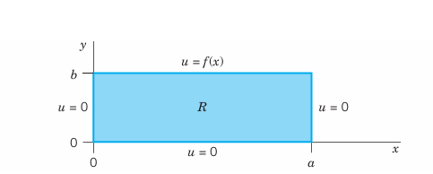
13.9.9.1 Dirichlet Problem in a Rectangle R (Figure 13.11)
We consider a Dirichlet problem for Laplace’s equation (Equation 13.64) in a rectangle \(R\), assuming that the temperature \(u(x, y)\) equals a given function \(f(x)\) on the upper side and 0 on the other three sides of the rectangle.
We solve this problem by separating variables. Substituting \(u(x, y) = F(x)G(y)\) into (Equation 13.64) written as \(u_{xx} = -u_{yy}\), dividing by \(FG\), and equating both sides to a negative constant \(-k\), we obtain \[ \frac{1}{F} \frac{d^2 F}{dx^2} = -\frac{1}{G} \frac{d^2 G}{dy^2} = -k. \]
From this we get \[ \frac{d^2 F}{dx^2} + kF = 0, \] and the left and right boundary conditions imply \[ F(0) = 0 \quad \text{and} \quad F(a) = 0. \]
This gives \(k = (n\pi/a)^2\) and corresponding nonzero solutions \[ F_n(x) = \sin \frac{n\pi x}{a}, \quad n = 1, 2, \dots \tag{13.65}\]
The ODE for \(G\) with \(k = (n\pi/a)^2\) then becomes \[ \frac{d^2 G}{dy^2} - \left(\frac{n\pi}{a}\right)^2 G = 0. \]
Solutions are \[ G_n(y) = A_n e^{n\pi y/a} + B_n e^{-n\pi y/a}. \]
Now the boundary condition \(u = 0\) on the lower side of \(R\) implies that \(G_n(0) = 0\); that is, \(G_n(0) = A_n + B_n = 0\) or \(B_n = -A_n\). This gives \[ G_n(y) = A_n \left( e^{n\pi y/a} - e^{-n\pi y/a} \right) = 2 A_n \sinh \frac{n\pi y}{a}. \]
From this and (Equation 13.65), writing \(2A_n = A_n^*\), we obtain as the eigenfunctions of our problem \[ u_n(x, y) = F_n(x)G_n(y) = A_n^* \sin \frac{n\pi x}{a} \sinh \frac{n\pi y}{a}. \tag{13.66}\]
These solutions satisfy the boundary condition \(u = 0\) on the left, right, and lower sides. To get a solution also satisfying the boundary condition \(u(x, b) = f(x)\) on the upper side, we consider the infinite series \[ u(x, y) = \sum_{n=1}^{\infty} u_n(x, y). \]
From this and (Equation 13.66) with \(y = b\) we obtain \[ u(x, b) = f(x) = \sum_{n=1}^{\infty} A_n^* \sin \frac{n\pi x}{a} \sinh \frac{n\pi b}{a}. \]
We can write this in the form \[ u(x, b) = \sum_{n=1}^{\infty} \left( A_n^* \sinh \frac{n\pi b}{a} \right) \sin \frac{n\pi x}{a}. \]
This shows that the expressions in the parentheses must be the Fourier sine coefficients \(b_n\) of \(f(x)\); that is, by (4) in , \[ A_n^* \sinh \frac{n\pi b}{a} = \frac{2}{a} \int_0^a f(x) \sin \frac{n\pi x}{a} \, dx. \]
From this and (Equation 13.66) we see that the solution of our problem is \[ u(x, y) = \sum_{n=1}^{\infty} u_n(x, y) = \sum_{n=1}^{\infty} A_n^* \sin \frac{n\pi x}{a} \sinh \frac{n\pi y}{a} \tag{13.67}\] where \[ A_n^* = \frac{2}{a \sinh(n\pi b / a)} \int_0^a f(x) \sin \frac{n\pi x}{a} \, dx. \tag{13.68}\]
We have obtained this solution formally, neither considering convergence nor showing that the series for \(u\), \(u_{xx}\), and \(u_{yy}\) have the right sums. This can be proved if one assumes that \(f\) and \(f'\) are continuous and \(f''\) is piecewise continuous on the interval \(0 \le x \le a\). The proof is somewhat involved and relies on uniform convergence. It can be found in [C4] listed in .
13.9.10 Unifying Power of Methods. Electrostatics, Elasticity
The Laplace equation (Equation 13.64) also governs the electrostatic potential of electrical charges in any region that is free of these charges. Thus our steady-state heat problem can also be interpreted as an electrostatic potential problem. Then (Equation 13.67), (Equation 13.68) is the potential in the rectangle \(R\) when the upper side of \(R\) is at potential \(f(x)\) and the other three sides are grounded.
Actually, in the steady-state case, the two-dimensional wave equation (to be considered in Section 13.13 and Section 13.14) also reduces to (Equation 13.64). Then (Equation 13.67), (Equation 13.68) is the displacement of a rectangular elastic membrane (rubber sheet, drumhead) that is fixed along its boundary, with three sides lying in the \(xy\)-plane and the fourth side given the displacement \(f(x)\).
This is another impressive demonstration of the unifying power of mathematics. It illustrates that entirely different physical systems may have the same mathematical model and can thus be treated by the same mathematical methods.
13.10 PROBLEM SET 12.6
1. Decay. How does the rate of decay of (Equation 13.57) with fixed \(n\) depend on the specific heat, the density, and the thermal conductivity of the material?
2. Decay. If the first eigenfunction (Equation 13.57) of the bar decreases to half its value within 20 sec, what is the value of the diffusivity?
3. Eigenfunctions. Sketch or graph and compare the first three eigenfunctions (Equation 13.57) with \(B_n = 1\), \(c = 1\), and \(L = \pi\) for \(t = 0, 0.1, 0.2, \dots, 1.0\).
4. WRITING PROJECT. Wave and Heat Equations. Compare these PDEs with respect to general behavior of eigenfunctions and kind of boundary and initial conditions. State the difference between Figure 13.6 in Section 13.4 and Figure 13.10.
5–7 LATERALLY INSULATED BAR
Find the temperature \(u(x, t)\) in a bar of silver of length 10 cm and constant cross section of area \(1\text{ cm}^2\) (density \(10.6\text{ g/cm}^3\), thermal conductivity \(1.04\text{ cal}/(\text{cm sec }^\circ\text{C})\), specific heat \(0.056\text{ cal}/(\text{g }^\circ\text{C})\)) that is perfectly insulated laterally, with ends kept at temperature \(0^\circ\text{C}\) and initial temperature \(f(x)^\circ\text{C}\), where:
5. \(f(x) = \sin 0.1\pi x\)
6. \(f(x) = 4 - 0.8 |x - 5|\)
7. \(f(x) = x(10 - x)\)
8. Arbitrary temperatures at ends. If the ends \(x = 0\) and \(x = L\) of the bar in the text are kept at constant temperatures \(U_1\) and \(U_2\), respectively, what is the temperature \(u_\infty(x)\) in the bar after a long time (theoretically, as \(t \to \infty\))? First guess, then calculate.
9. In Prob. 8 find the temperature at any time.
10. Change of end temperatures. Assume that the ends of the bar in Probs. 5–7 have been kept at \(100^\circ\text{C}\) for a long time. Then at some instant, call it \(t = 0\), the temperature at \(x = L\) is suddenly changed to \(0^\circ\text{C}\) and kept at \(0^\circ\text{C}\), whereas the temperature at \(x = 0\) is kept at \(100^\circ\text{C}\). Find the temperature in the middle of the bar at \(t = 1, 2, 3, 10, 50\text{ sec}\). First guess, then calculate.
BAR UNDER ADIABATIC CONDITIONS
“Adiabatic” means no heat exchange with the neighborhood, because the bar is completely insulated, also at the ends. Physical Information: The heat flux at the ends is proportional to the value of \(\partial u / \partial x\) there.
11. Show that for the completely insulated bar, \(u_x(0, t) = 0\), \(u_x(L, t) = 0\), \(u(x, 0) = f(x)\) and separation of variables gives the following solution, with \(A_n\) given by (2) in : \[ u(x, t) = A_0 + \sum_{n=1}^{\infty} A_n \cos \frac{n\pi x}{L} e^{-(cn\pi/L)^2 t}. \]
12–15. Find the temperature in Prob. 11 with \(L = \pi\), \(c = 1\), and:
12. \(f(x) = x\)
13. \(f(x) = 1\)
14. \(f(x) = \cos 2x\)
15. \(f(x) = 1 - \frac{x}{\pi}\)
16. A bar with heat generation of constant rate \(H (> 0)\) is modeled by \(u_t = c^2 u_{xx} + H\). Solve this problem if \(L = \pi\) and the ends of the bar are kept at \(0^\circ\text{C}\). Hint. Set \(u = v - \frac{H x(x-\pi)}{2c^2}\).
17. Heat flux. The heat flux of a solution \(u(x, t)\) across \(x = 0\) is defined by \(\Phi(t) = -K u_x(0, t)\). Find \(\Phi(t)\) for the solution (Equation 13.58). Explain the name. Is it physically understandable that \(\Phi\) goes to 0 as \(t \to \infty\)?
18–25 TWO-DIMENSIONAL PROBLEMS
18. Laplace equation. Find the potential in the rectangle \(0 \le x \le 20\), \(0 \le y \le 40\) whose upper side is kept at potential 110 V and whose other sides are grounded.
19. Find the potential in the square \(0 \le x \le 2\), \(0 \le y \le 2\) if the upper side is kept at the potential \(1000 \sin\left(\frac{1}{2}\pi x\right)\) and the other sides are grounded.
20. CAS PROJECT. Isotherms. Find the steady-state solutions (temperatures) in the square plate in Figure 13.12 with \(a = 2\) satisfying the following boundary conditions. Graph isotherms.
\(u = 80 \sin \pi x\) on the upper side, 0 on the others.
\(u = 0\) on the vertical sides, assuming that the other sides are perfectly insulated.
Boundary conditions of your choice (such that the solution is not identically zero).
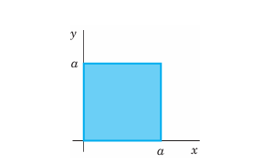
21. Heat flow in a plate. The faces of the thin square plate in Figure 13.12 with side \(a = 24\) are perfectly insulated. The upper side is kept at \(25^\circ\text{C}\) and the other sides are kept at \(0^\circ\text{C}\). Find the steady-state temperature \(u(x, y)\) in the plate.
22. Find the steady-state temperature in the plate in Prob. 21 if the lower side is kept at \(U_0^\circ\text{C}\), the upper side at \(U_1^\circ\text{C}\), and the other sides are kept at \(0^\circ\text{C}\). Hint: Split into two problems in which the boundary temperature is 0 on three sides for each problem.
23. Mixed boundary value problem. Find the steady-state temperature in the plate in Prob. 21 with the upper and lower sides perfectly insulated, the left side kept at \(0^\circ\text{C}\), and the right side kept at \(f(y)^\circ\text{C}\).
24. Radiation. Find steady-state temperatures in the rectangle in Figure 13.11 with the upper and left sides perfectly insulated and the right side radiating into a medium at \(0^\circ\text{C}\) according to \(u_x(a, y) + h u(a, y) = 0\), \(h > 0\) constant. (You will get many solutions since no condition on the lower side is given.)
25. Find formulas similar to (Equation 13.67), (Equation 13.68) for the temperature in the rectangle \(R\) of the text when the lower side of \(R\) is kept at temperature \(f(x)\) and the other sides are kept at \(0^\circ\text{C}\).
13.11 Heat Equation: Modeling Very Long Bars. Solution by Fourier Integrals and Transforms
Our discussion of the heat equation \[ \frac{\partial u}{\partial t} = c^2 \frac{\partial^2 u}{\partial x^2} \tag{13.69}\] in the last section extends to bars of infinite length, which are good models of very long bars or wires (such as a wire of length, say, 300 ft). Then the role of Fourier series in the solution process will be taken by Fourier integrals ().
Let us illustrate the method by solving (Equation 13.69) for a bar that extends to infinity on both sides (and is laterally insulated as before). Then we do not have boundary conditions, but only the initial condition \[ u(x, 0) = f(x) \quad (-\infty < x < \infty) \tag{13.70}\] where \(f(x)\) is the given initial temperature of the bar.
To solve this problem, we start as in the last section, substituting \(u(x, t) = F(x)G(t)\) into (Equation 13.69). This gives the two ODEs \[ F'' + p^2 F = 0 \tag{13.71}\] and \[ \dot{G} + c^2 p^2 G = 0. \tag{13.72}\]
Solutions are \[ F(x) = A \cos px + B \sin px \quad \text{and} \quad G(t) = e^{-c^2 p^2 t}, \] respectively, where \(A\) and \(B\) are any constants. Hence a solution of (Equation 13.69) is \[ u(x, t; p) = F G = (A \cos px + B \sin px) e^{-c^2 p^2 t}. \tag{13.73}\]
Here we had to choose the separation constant \(k\) negative, \(k = -p^2\), because positive values of \(k\) would lead to an increasing exponential function in (Equation 13.73), which has no physical meaning.
13.11.1 Use of Fourier Integrals
Any series of functions (Equation 13.73), found in the usual manner by taking \(p\) as multiples of a fixed number, would lead to a function that is periodic in \(x\) when \(t = 0\). However, since \(f(x)\) in (Equation 13.70) is not assumed to be periodic, it is natural to use Fourier integrals instead of Fourier series. Also, \(A\) and \(B\) in (Equation 13.73) are arbitrary and we may regard them as functions of \(p\), writing \(A = A(p)\) and \(B = B(p)\). Now, since the heat equation (Equation 13.69) is linear and homogeneous, the function \[ u(x, t) = \int_0^{\infty} u(x, t; p) \, dp = \int_0^{\infty} [A(p) \cos px + B(p) \sin px] e^{-c^2 p^2 t} \, dp \tag{13.74}\] is then a solution of (Equation 13.69), provided this integral exists and can be differentiated twice with respect to \(x\) and once with respect to \(t\).
13.11.1.1 Determination of A(p) and B(p) from the Initial Condition
From (Equation 13.74) and (Equation 13.70) we get \[ u(x, 0) = \int_0^{\infty} [A(p) \cos px + B(p) \sin px] \, dp = f(x). \tag{13.75}\]
This gives \(A(p)\) and \(B(p)\) in terms of \(f(x)\); indeed, from (4) in we have \[ A(p) = \frac{1}{\pi} \int_{-\infty}^{\infty} f(v) \cos pv \, dv, \quad B(p) = \frac{1}{\pi} \int_{-\infty}^{\infty} f(v) \sin pv \, dv. \tag{13.76}\]
According to (1*), , our Fourier integral (Equation 13.75) with these \(A(p)\) and \(B(p)\) can be written \[ u(x, 0) = \frac{1}{\pi} \int_0^{\infty} \left[ \int_{-\infty}^{\infty} f(v) \cos (px - pv) \, dv \right] \, dp. \]
Similarly, (Equation 13.74) in this section becomes \[ u(x, t) = \frac{1}{\pi} \int_0^{\infty} \left[ \int_{-\infty}^{\infty} f(v) \cos (px - pv) e^{-c^2 p^2 t} \, dv \right] \, dp. \]
Assuming that we may reverse the order of integration, we obtain \[ u(x, t) = \frac{1}{\pi} \int_{-\infty}^{\infty} f(v) \left[ \int_0^{\infty} e^{-c^2 p^2 t} \cos (px - pv) \, dp \right] \, dv. \tag{13.77}\]
Then we can evaluate the inner integral by using the formula \[ \int_0^{\infty} e^{-s^2} \cos 2bs \, ds = \frac{\sqrt{\pi}}{2} e^{-b^2}. \tag{13.78}\]
A derivation of ( 13.78 This takes the form of our inner integral if we choose \(p = s / (c\sqrt{t})\) as a new variable of integration and set \[ b = \frac{x-v}{2c\sqrt{t}}. \]
Then \(2bs = (x-v)p\) and \(ds = c\sqrt{t} \, dp\), so that (Equation 13.78) becomes \[ \int_0^{\infty} e^{-c^2 p^2 t} \cos (px - pv) \, dp = \frac{\sqrt{\pi}}{2c\sqrt{t}} \exp\left( -\frac{(x-v)^2}{4c^2 t} \right). \]
By inserting this result into (Equation 13.77) we obtain the representation \[ u(x, t) = \frac{1}{2c\sqrt{\pi t}} \int_{-\infty}^{\infty} f(v) \exp \left( -\frac{(x-v)^2}{4c^2 t} \right) \, dv. \tag{13.79}\]
Taking \(z = (v-x) / (2c\sqrt{t})\) as a variable of integration, we get the alternative form \[ u(x, t) = \frac{1}{\sqrt{\pi}} \int_{-\infty}^{\infty} f(x + 2cz\sqrt{t}) e^{-z^2} \, dz. \tag{13.80}\]
If \(f(x)\) is bounded for all values of \(x\) and integrable in every finite interval, it can be shown (see Ref. [C10]) that the function (Equation 13.79) or (Equation 13.80) satisfies (Equation 13.69) and (Equation 13.70). Hence this function is the required solution in the present case.
13.11.2 Temperature in an Infinite Bar
Find the temperature in the infinite bar if the initial temperature is (Figure 13.13) \[ f(x) = \begin{cases} U_0 & \text{if } |x| < 1 \ 0 & \text{if } |x| > 1 \end{cases} \quad (U_0 = \text{const}). \]
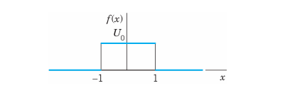
Solution. From (Equation 13.79) we have \[ u(x, t) = \frac{U_0}{2c\sqrt{\pi t}} \int_{-1}^1 \exp\left( -\frac{(x-v)^2}{4c^2 t} \right) \, dv. \]
If we introduce the above variable of integration \(z\), then the integration over \(v\) from \(-1\) to \(1\) corresponds to the integration over \(z\) from \((-1-x) / (2c\sqrt{t})\) to \((1-x) / (2c\sqrt{t})\), and \[ u(x, t) = \frac{U_0}{\sqrt{\pi}} \int_{-(1+x)/(2c\sqrt{t})}^{(1-x)/(2c\sqrt{t})} e^{-z^2} \, dz \quad (t > 0). \tag{13.81}\]
We mention that this integral is not an elementary function, but can be expressed in terms of the error function, whose values have been tabulated (see CAS Project 9, Section 13.12). Figure 13.14 shows \(u(x, t)\) for \(U_0 = 100^\circ\text{C}\), \(c^2 = 1\text{ cm}^2/\text{sec}\), and several values of \(t\).
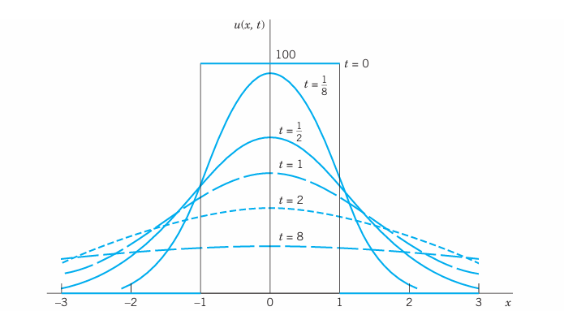
13.11.3 Use of Fourier Transforms
The Fourier transform is closely related to the Fourier integral, from which we obtained the transform in . And the transition to the Fourier cosine and sine transform in was even simpler. Hence it should not surprise you that we can use these transforms for solving our present or similar problems. The Fourier transform applies to problems concerning the entire axis, and the Fourier cosine and sine transforms to problems involving the positive half-axis. Let us explain these transform methods by typical applications that fit our present discussion.
13.11.4 Temperature in the Infinite Bar in Example 1
Solve Example 1 using the Fourier transform.
Solution. The problem consists of the heat equation (Equation 13.69) and the initial condition (Equation 13.70), which in this example is \(f(x) = U_0\) if \(|x| < 1\) and 0 otherwise.
Our strategy is to take the Fourier transform with respect to \(x\) and then to solve the resulting ordinary DE in \(t\). The details are as follows.
Let \(\hat{u} = \mathcal{F}(u)\) denote the Fourier transform of \(u\), regarded as a function of \(x\). From (10) in we see that the heat equation (Equation 13.69) gives \[ \mathcal{F}(u_t) = c^2 \mathcal{F}(u_{xx}) = c^2 (-w^2) \mathcal{F}(u) = -c^2 w^2 \hat{u}. \]
On the left, assuming that we may interchange the order of differentiation and integration, we have \[ \mathcal{F}(u_t) = \frac{1}{\sqrt{2\pi}} \int_{-\infty}^{\infty} u_t e^{-iwx} \, dx = \frac{\partial \hat{u}}{\partial t}. \] Thus \[ \frac{\partial \hat{u}}{\partial t} = -c^2 w^2 \hat{u}. \]
Since this equation involves only a derivative with respect to \(t\) but none with respect to \(w\), this is a first-order ordinary DE, with \(t\) as the independent variable and \(w\) as a parameter. By separating variables () we get the general solution \[ \hat{u}(w, t) = C(w) e^{-c^2 w^2 t} \] with the arbitrary “constant” \(C(w)\) depending on the parameter \(w\). The initial condition (Equation 13.70) yields the relationship \[ \hat{u}(w, 0) = C(w) = \hat{f}(w) = \mathcal{F}(f). \] Our intermediate result is \[ \hat{u}(w, t) = \hat{f}(w) e^{-c^2 w^2 t}. \]
The inversion formula (7), , now gives the solution \[ u(x, t) = \frac{1}{\sqrt{2\pi}} \int_{-\infty}^{\infty} \hat{f}(w) e^{-c^2 w^2 t} e^{iwx} \, dw. \tag{13.82}\]
In this solution we may insert the Fourier transform \[ \hat{f}(w) = \frac{1}{\sqrt{2\pi}} \int_{-\infty}^{\infty} f(v) e^{-ivw} \, dv. \]
Assuming that we may invert the order of integration, we then obtain \[ u(x, t) = \frac{1}{2\pi} \int_{-\infty}^{\infty} f(v) \left[ \int_{-\infty}^{\infty} e^{-c^2 w^2 t} e^{iw(x - v)} \, dw \right] \, dv. \]
By the Euler formula (3), , the integrand of the inner integral equals \[ e^{-c^2 w^2 t} \cos (wx - wv) + i e^{-c^2 w^2 t} \sin (wx - wv). \]
We see that its imaginary part is an odd function of \(w\), so that its integral is 0. The real part is an even function of \(w\), so that its integral from \(-\infty\) to \(\infty\) equals twice the integral from 0 to \(\infty\): \[ u(x, t) = \frac{1}{\pi} \int_{-\infty}^{\infty} f(v) \left[ \int_0^{\infty} e^{-c^2 w^2 t} \cos (wx - wv) \, dw \right] \, dv. \]
This agrees with (Equation 13.77) (with \(p = w\)) and leads to the further formulas (Equation 13.79) and (Equation 13.81).
13.11.5 Solution in Example 1 by the Method of Convolution
Solve the heat problem in Example 1 by the method of convolution.
Solution. The beginning is as in Example 2 and leads to (Equation 13.82), that is, \[ u(x, t) = \frac{1}{\sqrt{2\pi}} \int_{-\infty}^{\infty} \hat{f}(w) e^{-c^2 w^2 t} e^{iwx} \, dw. \tag{13.83}\]
Now comes the crucial idea. We recognize that this is of the form (13) in , that is, \[ u(x, t) = \mathcal{F}^{-1}\{ \sqrt{2\pi} \hat{f}(w) \hat{g}(w) \} = (f * g)(x) \tag{13.84}\] where \[ \hat{g}(w) = \frac{1}{\sqrt{2\pi}} e^{-c^2 w^2 t}. \tag{13.85}\]
Since, by the definition of convolution [(11), ], \[ (f * g)(x) = \int_{-\infty}^{\infty} f(p) g(x-p) \, dp, \tag{13.86}\] as our next and last step we must determine the inverse Fourier transform \(g\) of \(\hat{g}\). For this we can use formula 9 in Table III of , \[ \mathcal{F}(e^{-ax^2}) = \frac{1}{\sqrt{2a}} e^{-w^2 / (4a)} \] with a suitable \(a\). With \(c^2 t = 1 / (4a)\) or \(a = 1 / (4c^2 t)\), using (Equation 13.85) we obtain \[ \mathcal{F}(e^{-x^2 / (4c^2 t)}) = \sqrt{2c^2 t} e^{-c^2 w^2 t} = \sqrt{2c^2 t} \sqrt{2\pi} \hat{g}(w). \]
Hence \(\hat{g}\) has the inverse \[ g(x) = \frac{1}{2c\sqrt{\pi t}} e^{-x^2 / (4c^2 t)}. \]
Replacing \(x\) with \(x-p\) and substituting this into (Equation 13.86) we finally have \[ u(x, t) = (f * g)(x) = \frac{1}{2c\sqrt{\pi t}} \int_{-\infty}^{\infty} f(p) \exp\left( -\frac{(x-p)^2}{4c^2 t} \right) \, dp. \tag{13.87}\]
This solution formula of our problem agrees with (Equation 13.79). We wrote \((f * g)(x)\) without indicating the parameter \(t\) with respect to which we did not integrate.
13.11.6 Fourier Sine Transform Applied to the Heat Equation
If a laterally insulated bar extends from \(x = 0\) to infinity, we can use the Fourier sine transform. We let the initial temperature be \(u(x, 0) = f(x)\) and impose the boundary condition \(u(0, t) = 0\). Then from the heat equation and (9b) in , since \(f(0) = u(0, 0) = 0\), we obtain \[ \mathcal{F}_s(u_t) = \frac{\partial \hat{u}_s}{\partial t} = c^2 \mathcal{F}_s(u_{xx}) = c^2 \left( -w^2 \hat{u}_s(w, t) + \sqrt{\frac{2}{\pi}} w u(0, t) \right) = -c^2 w^2 \hat{u}_s(w, t). \]
This is a first-order ODE \(\partial \hat{u}_s / \partial t + c^2 w^2 \hat{u}_s = 0\). Its solution is \[ \hat{u}_s(w, t) = C(w) e^{-c^2 w^2 t}. \]
From the initial condition \(u(x, 0) = f(x)\) we have \(\hat{u}_s(w, 0) = \hat{f}_s(w) = C(w)\). Hence \[ \hat{u}_s(w, t) = \hat{f}_s(w) e^{-c^2 w^2 t}. \]
Taking the inverse Fourier sine transform and substituting \[ \hat{f}_s(w) = \sqrt{\frac{2}{\pi}} \int_0^{\infty} f(p) \sin wp \, dp \] on the right, we obtain the solution formula \[ u(x, t) = \frac{2}{\pi} \int_0^{\infty} \left[ \int_0^{\infty} f(p) \sin wp \, dp \right] e^{-c^2 w^2 t} \sin wx \, dw. \tag{13.88}\]
Figure 13.15 shows (Equation 13.88) with \(c=1\) for \(f(x) = 1\) if \(0 \le x \le 1\) and 0 otherwise, graphed over the \(xt\)-plane for \(0 \le x \le 2\), \(0.01 \le t \le 1.5\). Note that the curves of \(u(x, t)\) for constant \(t\) resemble those in Figure 13.14.
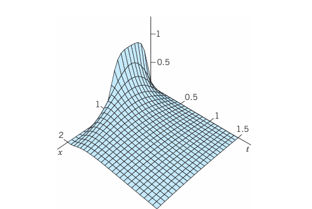
13.12 PROBLEM SET 12.7
1. CAS PROJECT. Heat Flow. (a) Graph the basic Figure 13.14. (b) In (a) apply animation to “see” the heat flow in terms of the decrease of temperature. (c) Graph \(u(x, t)\) with \(c = 1\) as a surface over a rectangle of the form \(-a \le x \le a\), \(0 \le t \le b\).
2–8 SOLUTION IN INTEGRAL FORM
Using (Equation 13.74), obtain the solution of (Equation 13.69) in integral form satisfying the initial condition \(u(x, 0) = f(x)\), where:
2. \(f(x) = 1\) if \(|x| < a\) and 0 otherwise.
3. \(f(x) = \frac{1}{1 + x^2}\). Hint. Use (15) in .
4. \(f(x) = e^{-|x|}\)
5. \(f(x) = |x|\) if \(|x| < 1\) and 0 otherwise.
6. \(f(x) = x\) if \(|x| < 1\) and 0 otherwise.
7. \(f(x) = \frac{\sin x}{x}\). Hint. Use Prob. 4 in .
8. Verify that \(u\) in the solution of Prob. 7 satisfies the initial condition.
9–12 CAS PROJECT. Error Function. \[ \text{erf } x = \frac{2}{\sqrt{\pi}} \int_0^x e^{-w^2} \, dw \tag{13.89}\]
This function is important in applied mathematics and physics (probability theory and statistics, thermodynamics, etc.) and fits our present discussion. Regarding it as a typical case of a special function defined by an integral that cannot be evaluated as in elementary calculus, do the following.
9. Graph the bell-shaped curve the curve of the integrand in ( 13.89. Show that \(\text{erf } x\) is odd. Show that \[ \frac{2}{\sqrt{\pi}} \int_a^b e^{-w^2} \, dw = \text{erf } b - \text{erf } a. \] \[ \frac{2}{\sqrt{\pi}} \int_{-b}^b e^{-w^2} \, dw = 2 \text{erf } b. \]
10. Obtain the Maclaurin series of \(\text{erf } x\) from that of the integrand. Use that series to compute a table of \(\text{erf } x\) for \(x = 0 \ (0.01) \ 3\) (meaning \(x = 0, 0.01, 0.02, \dots, 3\)).
11. Obtain the values required in Prob. 10 by an integration command of your CAS. Compare accuracy.
12. It can be shown that \(\text{erf}(\infty) = 1\). Confirm this experimentally by computing \(\text{erf } x\) for large \(x\).
13. Let \(f(x) = 1\) when \(x > 0\) and \(0\) when \(x < 0\). Using \(\text{erf}(\infty) = 1\), show that (Equation 13.80) then gives \[ u(x, t) = \frac{1}{\sqrt{\pi}} \int_{-x/(2c\sqrt{t})}^{\infty} e^{-z^2} \, dz = \frac{1}{2} + \frac{1}{2} \text{erf}\left( \frac{x}{2c\sqrt{t}} \right) \quad (t > 0). \]
14. Express the temperature (Equation 13.81) in terms of the error function.
15. Show that \(\Phi(x) = \frac{1}{\sqrt{2\pi}} \int_{-\infty}^x e^{-s^2/2} \, ds = \frac{1}{2} + \frac{1}{2} \text{erf}\left( \frac{x}{\sqrt{2}} \right)\). Here, the integral is the definition of the “distribution function of the normal probability distribution” to be discussed in .
13.13 Modeling: Membrane, Two-Dimensional Wave Equation
Since the modeling here will be similar to that of Section 13.3, you may want to take another look at Section 13.3.
The vibrating string in Section 13.3 is a basic one-dimensional vibrational problem. Equally important is its two-dimensional analog, namely, the motion of an elastic membrane, such as a drumhead, that is stretched and then fixed along its edge. Indeed, setting up the model will proceed almost as in Section 13.3.
13.13.1 Physical Assumptions
- The mass of the membrane per unit area is constant (“homogeneous membrane”). The membrane is perfectly flexible and offers no resistance to bending.
- The membrane is stretched and then fixed along its entire boundary in the \(xy\)-plane. The tension per unit length \(T\) caused by stretching the membrane is the same at all points and in all directions and does not change during the motion.
- The deflection \(u(x, y, t)\) of the membrane during the motion is small compared to the size of the membrane, and all angles of inclination are small.
Although these assumptions cannot be realized exactly, they hold relatively accurately for small transverse vibrations of a thin elastic membrane, so that we shall obtain a good model, for instance, of a drumhead.
13.13.2 Derivation of the PDE of the Model (“Two-Dimensional Wave Equation”) from Forces
As in Section 13.3 the model will consist of a PDE and additional conditions. The PDE will be obtained by the same method as in Section 13.3, namely, by considering the forces acting on a small portion of the physical system, the membrane in Figure 13.16, as it is moving up and down.
Since the deflections of the membrane and the angles of inclination are small, the sides of the portion are approximately equal to \(\Delta x\) and \(\Delta y\). The tension \(T\) is the force per unit length. Hence the forces acting on the sides of the portion are approximately \(T\Delta x\) and \(T\Delta y\). Since the membrane is perfectly flexible, these forces are tangent to the moving membrane at every instant.
13.13.3 Horizontal Components of the Forces
We first consider the horizontal components of the forces. These components are obtained by multiplying the forces by the cosines of the angles of inclination. Since these angles are small, their cosines are close to 1. Hence the horizontal components of the forces at opposite sides are approximately equal. Therefore, the motion of the particles of the membrane in a horizontal direction will be negligibly small. From this we conclude that we may regard the motion of the membrane as transversal; that is, each particle moves vertically.
13.13.4 Vertical Components of the Forces
These components along the right side and the left side are (Figure 13.16), respectively, \[ T\Delta y \sin \beta \quad \text{and} \quad -T\Delta y \sin \alpha. \]
Here \(\alpha\) and \(\beta\) are the values of the angle of inclination (which varies slightly along the edges) in the middle of the edges, and the minus sign appears because the force on the left side is directed downward. Since the angles are small, we may replace their sines by their tangents. Hence the resultant of those two vertical components is \[ T\Delta y (\sin \beta - \sin \alpha) \approx T\Delta y (\tan \beta - \tan \alpha) = T\Delta y [u_x(x + \Delta x, y_1) - u_x(x, y_2)] \tag{13.90}\] where subscripts \(x\) denote partial derivatives and \(y_1\) and \(y_2\) are values between \(y\) and \(y + \Delta y\). Similarly, the resultant of the vertical components of the forces acting on the other two sides of the portion is \[ T\Delta x [u_y(x_1, y + \Delta y) - u_y(x_2, y)] \tag{13.91}\] where \(x_1\) and \(x_2\) are values between \(x\) and \(x + \Delta x\).
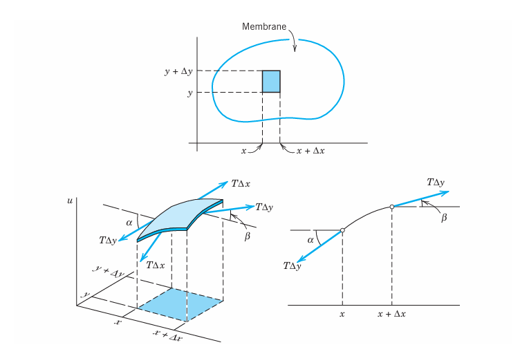
13.13.5 Newton’s Second Law Gives the PDE of the Model
By Newton’s second law (see ) the sum of the forces given by (Equation 13.90) and (Equation 13.91) is equal to the mass \(\rho \Delta A\) of that small portion times the acceleration \(\partial^2 u / \partial t^2\); here \(\rho\) is the mass of the undeflected membrane per unit area, and \(\Delta A = \Delta x \Delta y\) is the area of that portion when it is undeflected. Thus \[ \rho \Delta x \Delta y \frac{\partial^2 u}{\partial t^2} = T\Delta y [u_x(x + \Delta x, y_1) - u_x(x, y_2)] + T\Delta x [u_y(x_1, y + \Delta y) - u_y(x_2, y)] \] where the derivative on the left is evaluated at some suitable point \((x, y)\) corresponding to that portion. Division by \(\rho \Delta x \Delta y\) gives \[ \frac{\partial^2 u}{\partial t^2} = \frac{T}{\rho} \left[ \frac{u_x(x + \Delta x, y_1) - u_x(x, y_2)}{\Delta x} + \frac{u_y(x_1, y + \Delta y) - u_y(x_2, y)}{\Delta y} \right]. \]
If we let \(\Delta x\) and \(\Delta y\) approach zero, we obtain the PDE of the model \[ \frac{\partial^2 u}{\partial t^2} = c^2 \left( \frac{\partial^2 u}{\partial x^2} + \frac{\partial^2 u}{\partial y^2} \right), \quad c^2 = \frac{T}{\rho}. \tag{13.92}\]
This PDE is called the two-dimensional wave equation. The expression in parentheses is the Laplacian \(\nabla^2 u\) of \(u\) (). Hence (Equation 13.92) can be written \[ \frac{\partial^2 u}{\partial t^2} = c^2 \nabla^2 u. \tag{13.93}\]
Solutions of the wave equation (Equation 13.92) will be obtained and discussed in the next section.
13.14 Rectangular Membrane. Double Fourier Series
Now we develop a solution for the PDE obtained in Section 13.13. Details are as follows.
The model of the vibrating membrane for obtaining the displacement \(u(x, y, t)\) of a point \((x, y)\) of the membrane from rest (\(u=0\)) at time \(t\) is \[ \frac{\partial^2 u}{\partial t^2} = c^2 \left( \frac{\partial^2 u}{\partial x^2} + \frac{\partial^2 u}{\partial y^2} \right) \tag{13.94}\] \[ u = 0 \quad \text{on the boundary} \tag{13.95}\] \[ u(x, y, 0) = f(x, y) \tag{13.96}\] \[ u_t(x, y, 0) = g(x, y). \tag{13.97}\]
Here (Equation 13.94) is the two-dimensional wave equation with \(c^2 = T/\rho\) just derived, (Equation 13.95) is the boundary condition (membrane fixed along the boundary in the \(xy\)-plane for all times \(t \ge 0\)), and (Equation 13.96), (Equation 13.97) are the initial conditions at \(t=0\), consisting of the given initial displacement (initial shape) \(f(x, y)\) and the given initial velocity \(g(x, y)\), where \(u_t = \partial u / \partial t\). We see that these conditions are quite similar to those for the string in Section 13.3.
Let us consider the rectangular membrane \(R\) in Figure 13.17. This is our first important model. It is much simpler than the circular drumhead, which will follow later. First we note that the boundary in equation (Equation 13.95) is the rectangle in Figure 13.17. We shall solve this problem in three steps:
- Step 1. By separating variables, first setting \(u(x, y, t) = F(x, y)G(t)\) and later \(F(x, y) = H(x)Q(y)\), we obtain from (Equation 13.94) an ODE (Equation 13.98) for \(G\) and later from a PDE (Equation 13.99) for \(F\) two ODEs (Equation 13.100) and (Equation 13.101) for \(H\) and \(Q\).
- Step 2. From the solutions of those ODEs we determine solutions (Equation 13.104) of (Equation 13.94) (“eigenfunctions” \(u_{mn}\)) that satisfy the boundary condition (Equation 13.95).
- Step 3. We compose the \(u_{mn}\) into a double series (Equation 13.108) solving the whole model (Equation 13.94), (Equation 13.95), (Equation 13.96), (Equation 13.97).
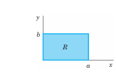
13.14.1 Step 1. Three ODEs From the Wave Equation (Equation 13.94)
To obtain ODEs from (Equation 13.94), we apply two successive separations of variables. In the first separation we set \(u(x, y, t) = F(x, y)G(t)\). Substitution into (Equation 13.94) gives \[ F\ddot{G} = c^2 (F_{xx}G + F_{yy}G) \] where subscripts denote partial derivatives and dots denote derivatives with respect to \(t\). To separate the variables, we divide both sides by \(c^2FG\): \[ \frac{\ddot{G}}{c^2 G} = \frac{1}{F}(F_{xx} + F_{yy}). \]
Since the left side depends only on \(t\), whereas the right side is independent of \(t\), both sides must equal a constant. By a simple investigation we see that only negative values of that constant will lead to solutions that satisfy (Equation 13.95) without being identically zero; this is similar to Section 13.4. Denoting that negative constant by \(- u^2\), we have \[ \frac{\ddot{G}}{c^2 G} = \frac{1}{F}(F_{xx} + F_{yy}) = - u^2. \]
This gives two equations: for the “time function” \(G(t)\) we have the ODE \[ \ddot{G} + \lambda^2 G = 0 \quad \text{where} \quad \lambda = c \nu \tag{13.98}\] and for the “amplitude function” \(F(x, y)\) a PDE, called the two-dimensional Helmholtz equation \[ F_{xx} + F_{yy} + u^2 F = 0. \tag{13.99}\]
Separation of the Helmholtz equation is achieved if we set \(F(x, y) = H(x)Q(y)\). By substitution of this into (Equation 13.99) we obtain \[ H'' Q + H Q'' + u^2 H Q = 0. \]
To separate the variables, we divide both sides by \(HQ\), finding \[ \frac{1}{H} H'' = -\frac{1}{Q}(Q'' + u^2 Q). \]
Both sides must equal a constant, by the usual argument. This constant must be negative, say, \(-k^2\), because only negative values will lead to solutions that satisfy (Equation 13.95) without being identically zero. Thus \[ \frac{1}{H} H'' = -\frac{1}{Q}(Q'' + u^2 Q) = -k^2. \]
This yields two ODEs for \(H\) and \(Q\), namely, \[ H'' + k^2 H = 0 \tag{13.100}\] and \[ Q'' + p^2 Q = 0 \quad \text{where} \quad p^2 = u^2 - k^2. \tag{13.101}\]
13.14.2 Step 2. Satisfying the Boundary Condition
General solutions of (Equation 13.100) and (Equation 13.101) are \[ H(x) = A \cos kx + B \sin kx \quad \text{and} \quad Q(y) = C \cos py + D \sin py \] with constant \(A, B, C, D\). From \(u = FG\) and (Equation 13.95) it follows that \(F = HQ\) must be zero on the boundary, that is, on the edges \(x = 0, x = a, y = 0, y = b\); see Figure 13.17. This gives the conditions \[ H(0) = 0, \quad H(a) = 0, \quad Q(0) = 0, \quad Q(b) = 0. \]
Hence \(H(0) = A = 0\) and then \(H(a) = B \sin ka = 0\). Here we must take \(B eq 0\) since otherwise \(H(x) \equiv 0\) and \(F(x, y) \equiv 0\). Hence \(\sin ka = 0\) or \(ka = m\pi\), that is, \[ k = \frac{m\pi}{a} \quad (m \text{ integer}). \]
In precisely the same fashion we conclude that \(C = 0\) and \(p\) must be restricted to the values \(p = n\pi / b\) where \(n\) is an integer. We thus obtain the solutions \(H = H_m\), \(Q = Q_n\), where \[ H_m(x) = \sin \frac{m\pi x}{a} \quad (m = 1, 2, \dots) \quad \text{and} \quad Q_n(y) = \sin \frac{n\pi y}{b} \quad (n = 1, 2, \dots). \]
As in the case of the vibrating string, it is not necessary to consider \(m, n = -1, -2, \dots\) since the corresponding solutions are essentially the same as for positive \(m\) and \(n\), except for a factor \(-1\). Hence the functions \[ F_{mn}(x, y) = H_m(x)Q_n(y) = \sin \frac{m\pi x}{a} \sin \frac{n\pi y}{b} \quad (m = 1, 2, \dots; \ n = 1, 2, \dots) \tag{13.102}\] are solutions of the Helmholtz equation (Equation 13.99) that are zero on the boundary of our membrane.
13.14.2.1 Eigenfunctions and Eigenvalues
Having taken care of (Equation 13.99), we turn to (Equation 13.98). Since \(p^2 = u^2 - k^2\) in (Equation 13.101) and \(\lambda = c \nu\) in (Equation 13.98), we have \[ \lambda = c\sqrt{k^2 + p^2}. \] Hence to \(k = m\pi / a\) and \(p = n\pi / b\) there corresponds the value \[ \lambda_{mn} = c\pi\sqrt{\frac{m^2}{a^2} + \frac{n^2}{b^2}} \quad (m = 1, 2, \dots; \ n = 1, 2, \dots) \tag{13.103}\] in the ODE (Equation 13.98). A corresponding general solution of (Equation 13.98) is \[ G_{mn}(t) = B_{mn} \cos \lambda_{mn} t + B_{mn}^* \sin \lambda_{mn} t. \]
It follows that the functions \(u_{mn}(x, y, t) = F_{mn}(x, y)G_{mn}(t)\), written out \[ u_{mn}(x, y, t) = \left( B_{mn} \cos \lambda_{mn} t + B_{mn}^* \sin \lambda_{mn} t \right) \sin \frac{m\pi x}{a} \sin \frac{n\pi y}{b} \tag{13.104}\] with \(\lambda_{mn}\) according to (Equation 13.103), are solutions of the wave equation (Equation 13.94) that are zero on the boundary of the rectangular membrane in Figure 13.17. These functions are called the eigenfunctions or characteristic functions, and the numbers \(\lambda_{mn}\) are called the eigenvalues or characteristic values of the vibrating membrane. The frequency of \(u_{mn}\) is \(\lambda_{mn} / 2\pi\).
13.14.2.2 Discussion of Eigenfunctions
It is very interesting that, depending on \(a\) and \(b\), several functions \(F_{mn}\) may correspond to the same eigenvalue. Physically this means that there may exist vibrations having the same frequency but entirely different nodal lines (curves of points on the membrane that do not move). Let us illustrate this with the following example.
13.14.3 Eigenvalues and Eigenfunctions of the Square Membrane
Consider the square membrane with \(a = b = 1\). From (Equation 13.103) we obtain its eigenvalues \[ \lambda_{mn} = c\pi\sqrt{m^2 + n^2}. \tag{13.105}\]
Hence \(\lambda_{mn} = \lambda_{nm}\), but for \(m eq n\) the corresponding functions \[ F_{mn} = \sin m\pi x \sin n\pi y \quad \text{and} \quad F_{nm} = \sin n\pi x \sin m\pi y \] are certainly different. For example, to \(\lambda_{12} = \lambda_{21} = c\pi\sqrt{5}\) there correspond the two functions \[ F_{12} = \sin \pi x \sin 2\pi y \quad \text{and} \quad F_{21} = \sin 2\pi x \sin \pi y. \]
Hence the corresponding solutions \[ u_{12} = \left( B_{12} \cos c\pi\sqrt{5} t + B_{12}^* \sin c\pi\sqrt{5} t \right) F_{12} \] and \[ u_{21} = \left( B_{21} \cos c\pi\sqrt{5} t + B_{21}^* \sin c\pi\sqrt{5} t \right) F_{21} \] have the nodal lines \(y = 1/2\) and \(x = 1/2\), respectively (see Figure 13.18). Taking \(B_{12} = 1\), \(B_{21} = B\), and \(B_{12}^* = B_{21}^* = 0\), we obtain \[ u_{12} + u_{21} = \cos c\pi\sqrt{5} t (F_{12} + B F_{21}) \tag{13.106}\] which represents another vibration corresponding to the eigenvalue \(c\pi\sqrt{5}\). The nodal line of this function is the solution of the equation \[ F_{12} + B F_{21} = \sin \pi x \sin 2\pi y + B \sin 2\pi x \sin \pi y = 0. \] Since \(\sin 2\alpha = 2 \sin \alpha \cos \alpha\), this is \[ 2 \sin \pi x \sin \pi y (\cos \pi y + B \cos \pi x) = 0. \tag{13.107}\]
Since \(0 < x < 1\) and \(0 < y < 1\), we must have \(\cos \pi y + B \cos \pi x = 0\). This solution depends on the value of \(B\) (see Figure 13.19).
From (Equation 13.105) we see that even more than two functions may correspond to the same numerical value of \(\lambda_{mn}\). For example, the four functions \(F_{18}, F_{81}, F_{47}\), and \(F_{74}\) correspond to the value \[ \lambda_{18} = \lambda_{81} = \lambda_{47} = \lambda_{74} = c\pi\sqrt{65} \] because \(1^2 + 8^2 = 4^2 + 7^2 = 65\).
This happens because 65 can be expressed as the sum of two squares of positive integers in several ways. According to a theorem by Gauss, this is the case for every sum of two squares among whose prime factors there are at least two different ones of the form \(4n+1\) where \(n\) is a positive integer. In our case we have \(65 = 5 \times 13 = (4 \times 1 + 1)(4 \times 3 + 1)\).
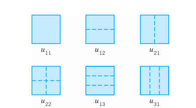
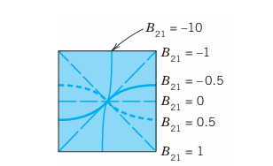
13.14.4 Step 3. Solution of the Model (Equation 13.94), (Equation 13.95), (Equation 13.96), (Equation 13.97). Double Fourier Series
So far we have solutions (Equation 13.104) satisfying (Equation 13.94) and (Equation 13.95) only. To obtain the solutions that also satisfy (Equation 13.96), (Equation 13.97), we proceed as in Section 13.4. We consider the double series \[ u(x, y, t) = \sum_{m=1}^{\infty} \sum_{n=1}^{\infty} u_{mn}(x, y, t) = \sum_{m=1}^{\infty} \sum_{n=1}^{\infty} \left( B_{mn} \cos \lambda_{mn} t + B_{mn}^* \sin \lambda_{mn} t \right) \sin \frac{m\pi x}{a} \sin \frac{n\pi y}{b}. \tag{13.108}\]
From (Equation 13.108) and (Equation 13.96), setting \(t=0\), we have \[ u(x, y, 0) = \sum_{m=1}^{\infty} \sum_{n=1}^{\infty} B_{mn} \sin \frac{m\pi x}{a} \sin \frac{n\pi y}{b} = f(x, y). \tag{13.109}\]
Suppose that \(f(x, y)\) can be represented by (Equation 13.109). (Sufficient for this is the continuity of \(f\), \(\partial f / \partial x\), \(\partial f / \partial y\), and \(\partial^2 f / \partial x \partial y\) in \(R\).) Then (Equation 13.109) is called the double Fourier series of \(f(x, y)\). Its coefficients can be determined as follows. Setting \[ K_m(y) = \sum_{n=1}^{\infty} B_{mn} \sin \frac{n\pi y}{b}, \tag{13.110}\] we can write (Equation 13.109) in the form \[ f(x, y) = \sum_{m=1}^{\infty} K_m(y) \sin \frac{m\pi x}{a}. \]
For fixed \(y\) this is the Fourier sine series of \(f(x, y)\), considered as a function of \(x\). From (4) in we see that the coefficients of this expansion are \[ K_m(y) = \frac{2}{a} \int_0^a f(x, y) \sin \frac{m\pi x}{a} \, dx. \tag{13.111}\]
Furthermore, (Equation 13.110) is the Fourier sine series of \(K_m(y)\), and from (4) in it follows that the coefficients are \[ B_{mn} = \frac{2}{b} \int_0^b K_m(y) \sin \frac{n\pi y}{b} \, dy. \]
From this and (Equation 13.111) we obtain the generalized Euler formula \[ B_{mn} = \frac{4}{ab} \int_0^b \int_0^a f(x, y) \sin \frac{m\pi x}{a} \sin \frac{n\pi y}{b} \, dx \, dy \quad (m = 1, 2, \dots; \ n = 1, 2, \dots) \tag{13.112}\] for the Fourier coefficients of \(f(x, y)\) in the double Fourier series (Equation 13.109).
The \(B_{mn}\) in (Equation 13.108) are now determined in terms of \(f(x, y)\). To determine the \(B_{mn}^*\), we differentiate (Equation 13.108) termwise with respect to \(t\); using (Equation 13.97), we obtain \[ \left. \frac{\partial u}{\partial t} \right|_{t=0} = \sum_{m=1}^{\infty} \sum_{n=1}^{\infty} B_{mn}^* \lambda_{mn} \sin \frac{m\pi x}{a} \sin \frac{n\pi y}{b} = g(x, y). \]
Suppose that \(g(x, y)\) can be developed in this double Fourier series. Then, proceeding as before, we find that the coefficients are \[ B_{mn}^* = \frac{4}{ab \lambda_{mn}} \int_0^b \int_0^a g(x, y) \sin \frac{m\pi x}{a} \sin \frac{n\pi y}{b} \, dx \, dy \quad (m = 1, 2, \dots; \ n = 1, 2, \dots). \tag{13.113}\]
13.14.4.1 Result
If \(f\) and \(g\) in (Equation 13.96), (Equation 13.97) are such that \(u\) can be represented by (Equation 13.108), then (Equation 13.108) with coefficients (Equation 13.112) and (Equation 13.113) is the solution of the model (Equation 13.94), (Equation 13.95), (Equation 13.96), (Equation 13.97).
13.14.5 Vibration of a Rectangular Membrane
Find the vibrations of a rectangular membrane of sides \(a = 4\text{ ft}\) and \(b = 2\text{ ft}\) (Figure 13.20) if the tension is 12.5 lb/ft, the density is 2.5 slugs/\(\text{ft}^2\) (as for light rubber), the initial velocity is 0, and the initial displacement is \[ f(x, y) = 0.1 x(4-x) y(2-y) = 0.1(4x - x^2)(2y - y^2) \text{ ft}. \tag{13.114}\]
Solution. \(c^2 = T/\rho = 12.5 / 2.5 = 5 \text{ [ft}^2/\text{sec}^2\text{]}\). Also \(B_{mn}^* = 0\) from (Equation 13.113). From (Equation 13.112) and (Equation 13.114), \[ B_{mn} = \frac{4}{4 \times 2} \int_0^2 \int_0^4 0.1(4x - x^2)(2y - y^2) \sin \frac{m\pi x}{4} \sin \frac{n\pi y}{2} \, dx \, dy \] \[ = \frac{1}{20} \left[ \int_0^4 (4x-x^2) \sin \frac{m\pi x}{4} \, dx \right] \left[ \int_0^2 (2y-y^2) \sin \frac{n\pi y}{2} \, dy \right]. \]
Two integrations by parts give for the first integral on the right \[ \frac{128}{m^3\pi^3} [1 - (-1)^m] = \frac{256}{m^3\pi^3} \quad (m \text{ odd}) \] and for the second integral \[ \frac{16}{n^3\pi^3} [1 - (-1)^n] = \frac{32}{n^3\pi^3} \quad (n \text{ odd}). \]
For even \(m\) or \(n\) we get 0. Together with the factor \(1/20\) we thus have \(B_{mn} = 0\) if \(m\) or \(n\) is even, and \[ B_{mn} = \frac{256 \times 32 \times 0.1}{20 m^3 n^3 \pi^6} = \frac{256 \times 1.6}{\pi^6 m^3 n^3} \approx \frac{0.426050}{m^3 n^3} \quad (m, n \text{ both odd}). \]
From this, (Equation 13.103), and (Equation 13.108) we obtain the answer \[ u(x, y, t) = 0.426050 \sum_{m,n \text{ odd}} \frac{1}{m^3 n^3} \cos \left( \frac{\sqrt{5}\pi}{4}\sqrt{m^2 + 4n^2} t \right) \sin \frac{m\pi x}{4} \sin \frac{n\pi y}{2} \tag{13.115}\] \[ = 0.426050 \left[ \cos \frac{\sqrt{25}\pi}{4} t \sin \frac{\pi x}{4} \sin \frac{\pi y}{2} + \frac{1}{27} \cos \frac{\sqrt{137}\pi}{4} t \sin \frac{\pi x}{4} \sin \frac{3\pi y}{2} \right. \] \[ \left. + \frac{1}{27} \cos \frac{\sqrt{113}\pi}{4} t \sin \frac{3\pi x}{4} \sin \frac{\pi y}{2} + \frac{1}{729} \cos \frac{\sqrt{145}\pi}{4} t \sin \frac{3\pi x}{4} \sin \frac{3\pi y}{2} + \dots \right]. \]
To discuss this solution, we note that the first term is very similar to the initial shape of the membrane, has no nodal lines, and is by far the dominating term because the coefficients of the next terms are much smaller. The second term has two horizontal nodal lines (\(y = 2/3, 4/3\)), the third term two vertical ones (\(x = 4/3, 8/3\)), the fourth term two horizontal and two vertical ones, and so on.
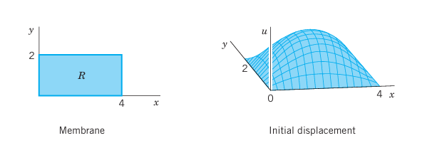
13.15 PROBLEM SET 12.9
1. Frequency. How does the frequency of the eigenfunctions of the rectangular membrane change (a) If we double the tension? (b) If we take a membrane of half the density of the original one? (c) If we double the sides of the membrane? Give reasons.
2. Assumptions. Which part of Assumption 2 cannot be satisfied exactly? Why did we also assume that the angles of inclination are small?
3. Determine and sketch the nodal lines of the square membrane for \(m = 1, 2, 3, 4\) and \(n = 1, 2, 3, 4\).
4–8 DOUBLE FOURIER SERIES
Represent \(f(x, y)\) by a series (Equation 13.109), where:
4. \(f(x, y) = 1\), \(a = b = 1\)
5. \(f(x, y) = y\), \(a = b = 1\)
6. \(f(x, y) = x\), \(a = b = 1\)
7. \(f(x, y) = xy\), \(a\) and \(b\) arbitrary
8. \(f(x, y) = xy(a-x)(b-y)\), \(a\) and \(b\) arbitrary
9. CAS PROJECT. Double Fourier Series. (a) Write a program that gives and graphs partial sums of (Equation 13.109). Apply it to Probs. 5 and 6. Do the graphs show that those partial sums satisfy the boundary condition (Equation 13.96)? Explain why. Why is the convergence rapid? (b) Do the tasks in (a) for Prob. 4. Graph a portion, say, \(0 \le x \le 1\), \(0 \le y \le 1\), of several partial sums on common axes, so that you can see how they differ. (See Figure 13.21.) (c) Do the tasks in (b) for functions of your choice.
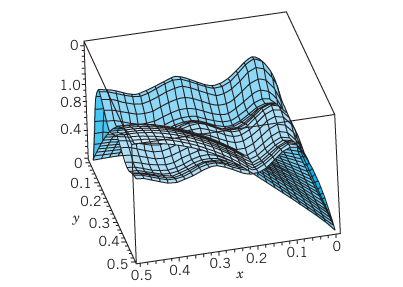
10. CAS EXPERIMENT. Quadruples of \(F_{mn}\). Write a program that gives you four numerically equal \(\lambda_{mn}\) in Example 1, so that four different \(F_{mn}\) correspond to it. Sketch the nodal lines of \(F_{18}, F_{81}, F_{47}, F_{74}\) in Example 1 and similarly for further \(F_{mn}\) that you will find.
11–13 SQUARE MEMBRANE
Find the deflection \(u(x, y, t)\) of the square membrane of side \(\pi\) and \(c^2 = 1\) for initial velocity 0 and initial deflection:
11. \(0.1 \sin 2x \sin 4y\)
12. \(0.01 \sin x \sin y\)
13. \(0.1xy(\pi-x)(\pi-y)\)
14–19 RECTANGULAR MEMBRANE
14. Verify the discussion of (Equation 13.115) in Example 2.
15. Do Prob. 3 for the membrane with \(a = 4\) and \(b = 2\).
16. Verify \(B_{mn}\) in Example 2 by integration by parts.
17. Find eigenvalues of the rectangular membrane of sides \(a = 2\) and \(b = 1\) to which there correspond two or more different (independent) eigenfunctions.
18. Minimum property. Show that among all rectangular membranes of the same area \(A = ab\) and the same \(c\) the square membrane is that for which \(u_{11}\) see ( 13.104 has the lowest frequency.
19. Deflection. Find the deflection of the membrane of sides \(a\) and \(b\) with \(c^2 = 1\) for the initial deflection \[ f(x, y) = \sin \frac{6\pi x}{a} \sin \frac{2\pi y}{b} \] and initial velocity 0.
20. Forced vibrations. Show that forced vibrations of a membrane are modeled by the PDE \(u_{tt} = c^2 \nabla^2 u + P/\rho\), where \(P(x, y, t)\) is the external force per unit area acting perpendicular to the \(xy\)-plane.
13.16 Laplacian in Polar Coordinates. Circular Membrane. Fourier–Bessel Series
It is a general principle in boundary value problems for PDEs to choose coordinates that make the formula for the boundary as simple as possible. Here polar coordinates are used for this purpose as follows. Since we want to discuss circular membranes (drumheads), we first transform the Laplacian in the wave equation (1), Section 13.14, \[ \frac{\partial^2 u}{\partial t^2} = c^2 \nabla^2 u = c^2 \left( \frac{\partial^2 u}{\partial x^2} + \frac{\partial^2 u}{\partial y^2} \right) \tag{13.116}\] (subscripts denoting partial derivatives) into polar coordinates \(r, \theta\) defined by \(x = r \cos \theta\), \(y = r \sin \theta\); thus, \[ r = \sqrt{x^2 + y^2}, \quad \tan \theta = \frac{y}{x}. \]
By the chain rule () we obtain \[ u_x = u_r r_x + u_\theta \theta_x. \]
Differentiating once more with respect to \(x\) and using the product rule and then again the chain rule gives \[ u_{xx} = (u_r)_x r_x + u_r r_{xx} + (u_\theta)_x \theta_x + u_\theta \theta_{xx} \] \[ = (u_{rr} r_x + u_{r\theta} \theta_x) r_x + u_r r_{xx} + (u_{\theta r} r_x + u_{\theta\theta} \theta_x) \theta_x + u_\theta \theta_{xx}. \tag{13.117}\]
Also, by differentiation of \(r\) and \(\theta\) we find \[ r_x = \frac{x}{r}, \quad \theta_x = -\frac{y}{r^2}. \] Differentiating these two formulas again, we obtain \[ r_{xx} = \frac{1}{r} - \frac{x^2}{r^3} = \frac{y^2}{r^3}, \quad \theta_{xx} = \frac{2xy}{r^4}. \]
We substitute all these expressions into (Equation 13.117). Assuming continuity of the first and second partial derivatives, we have \(u_{r\theta} = u_{\theta r}\), and by simplifying, \[ u_{xx} = \frac{x^2}{r^2} u_{rr} - 2\frac{xy}{r^3} u_{r\theta} + \frac{y^2}{r^4} u_{\theta\theta} + \frac{y^2}{r^3} u_r + 2\frac{xy}{r^4} u_\theta. \tag{13.118}\]
In a similar fashion it follows that \[ u_{yy} = \frac{y^2}{r^2} u_{rr} + 2\frac{xy}{r^3} u_{r\theta} + \frac{x^2}{r^4} u_{\theta\theta} + \frac{x^2}{r^3} u_r - 2\frac{xy}{r^4} u_\theta. \tag{13.119}\]
By adding (Equation 13.118) and (Equation 13.119) we see that the Laplacian of \(u\) in polar coordinates is \[ \nabla^2 u = \frac{\partial^2 u}{\partial r^2} + \frac{1}{r} \frac{\partial u}{\partial r} + \frac{1}{r^2} \frac{\partial^2 u}{\partial \theta^2}. \tag{13.120}\]
13.16.1 Circular Membrane
Circular membranes are important parts of drums, pumps, microphones, telephones, and other devices. This accounts for their great importance in engineering. Whenever a circular membrane is plane and its material is elastic, but offers no resistance to bending (this excludes thin metallic membranes!), its vibrations are modeled by the two-dimensional wave equation in polar coordinates obtained from (Equation 13.116) with \(\nabla^2 u\) given by (Equation 13.120), that is, \[ \frac{\partial^2 u}{\partial t^2} = c^2 \left( \frac{\partial^2 u}{\partial r^2} + \frac{1}{r} \frac{\partial u}{\partial r} + \frac{1}{r^2} \frac{\partial^2 u}{\partial \theta^2} \right), \quad c^2 = \frac{T}{\rho}. \tag{13.121}\]
We shall consider a membrane of radius \(R\) (Figure 13.22) and determine solutions \(u(r, t)\) that are radially symmetric. (Solutions also depending on the angle \(\theta\) will be discussed in the problem set.) Then \(u_{\theta\theta} = 0\) in (Equation 13.121) and the model of the problem (the analog of (1), (2), (3) in Section 13.14) is \[ \frac{\partial^2 u}{\partial t^2} = c^2 \left( \frac{\partial^2 u}{\partial r^2} + \frac{1}{r} \frac{\partial u}{\partial r} \right) \tag{13.122}\] \[ u(R, t) = 0 \quad \text{for all } t \ge 0. \tag{13.123}\] \[ u(r, 0) = f(r) \tag{13.124}\] \[ u_t(r, 0) = g(r). \tag{13.125}\]
Here (Equation 13.123) means that the membrane is fixed along the boundary circle \(r = R\). The initial deflection \(f(r)\) and the initial velocity \(g(r)\) depend only on \(r\), not on \(\theta\), so that we can expect radially symmetric solutions \(u(r, t)\).
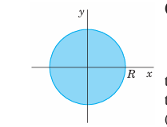
13.16.2 Step 1. Two ODEs From the Wave Equation (Equation 13.122). Bessel’s Equation
Using the method of separation of variables, we first determine solutions \(u(r, t) = W(r)G(t)\). (We write \(W\), not \(F\) because \(W\) depends on \(r\), whereas \(F\), used before, depended on \(x\) and \(y\).) Substituting \(u = WG\) and its derivatives into (Equation 13.122) and dividing the result by \(c^2WG\), we get \[ \frac{\ddot{G}}{c^2 G} = \frac{1}{W} \left( W'' + \frac{1}{r} W' \right) \] where dots denote derivatives with respect to \(t\) and primes denote derivatives with respect to \(r\). The expressions on both sides must equal a constant. This constant must be negative, say, \(-k^2\), in order to obtain solutions that satisfy the boundary condition without being identically zero. Thus, \[ \frac{\ddot{G}}{c^2 G} = \frac{1}{W} \left( W'' + \frac{1}{r} W' \right) = -k^2. \]
This gives the two linear ODEs \[ \ddot{G} + \lambda^2 G = 0 \quad \text{where} \quad \lambda = ck \tag{13.126}\] and \[ W'' + \frac{1}{r} W' + k^2 W = 0. \tag{13.127}\]
We can reduce (Equation 13.127) to Bessel’s equation () if we set \(s = kr\). Then \(1/r = k/s\) and, retaining the notation \(W\) for simplicity, we obtain by the chain rule \[ W' = \frac{dW}{dr} = \frac{dW}{ds} \frac{ds}{dr} = \frac{dW}{ds} k \quad \text{and} \quad W'' = \frac{d^2W}{ds^2} k^2. \] By substituting this into (Equation 13.127) and omitting the common factor \(k^2\) we have \[ \frac{d^2 W}{ds^2} + \frac{1}{s} \frac{dW}{ds} + W = 0. \tag{13.128}\]
This is Bessel’s equation (1), , with parameter $ u = 0$.
13.16.3 Step 2. Satisfying the Boundary Condition (Equation 13.123)
Solutions of (Equation 13.128) are the Bessel functions \(J_0\) and \(Y_0\) of the first and second kind (see ). But \(Y_0\) becomes infinite at \(s \to 0\), so that we cannot use it because the deflection of the membrane must always remain finite. This leaves us with \[ W(r) = J_0(s) = J_0(kr) \quad (s = kr). \tag{13.129}\]
On the boundary \(r = R\) we get \(W(R) = J_0(kR) = 0\) from (Equation 13.123) (because \(G \equiv 0\) would imply \(u \equiv 0\)). We can satisfy this condition because \(J_0\) has (infinitely many) positive zeros, \(s = \alpha_1, \alpha_2, \dots\) (see Figure 13.23), with numerical values \[ \alpha_1 \approx 2.4048, \quad \alpha_2 \approx 5.5201, \quad \alpha_3 \approx 8.6537, \quad \alpha_4 \approx 11.7915, \quad \alpha_5 \approx 14.9309 \] and so on. Equation (Equation 13.129) now implies \[ kR = \alpha_m, \quad \text{thus} \quad k = k_m = \frac{\alpha_m}{R}, \quad m = 1, 2, \dots \tag{13.130}\]
Hence the functions \[ W_m(r) = J_0(k_m r) = J_0\left( \frac{\alpha_m r}{R} \right), \quad m = 1, 2, \dots \tag{13.131}\] are solutions of (Equation 13.127) that are zero on the boundary circle \(r = R\).
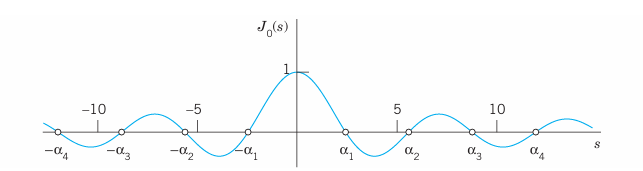
13.16.3.1 Eigenfunctions and Eigenvalues
For \(W_m\) in (Equation 13.131), a corresponding general solution of (Equation 13.126) with \(\lambda = \lambda_m = ck_m = c\alpha_m / R\) is \[ G_m(t) = A_m \cos \lambda_m t + B_m \sin \lambda_m t. \]
Hence the functions \[ u_m(r, t) = W_m(r)G_m(t) = \left( A_m \cos \lambda_m t + B_m \sin \lambda_m t \right) J_0(k_m r) \tag{13.132}\] with \(m = 1, 2, \dots\) are solutions of the wave equation (Equation 13.122) satisfying the boundary condition (Equation 13.123). These are the eigenfunctions of our problem. The corresponding eigenvalues are \(\lambda_m\).
The vibration of the membrane corresponding to \(u_m\) is called the \(m\)th normal mode; it has the frequency \(\lambda_m / 2\pi\) cycles per unit time. Since the zeros of the Bessel function \(J_0\) are not regularly spaced on the axis (in contrast to the zeros of the sine functions appearing in the case of the vibrating string), the sound of a drum is entirely different from that of a violin. The forms of the normal modes can easily be obtained from Figure 13.23 and are shown in Figure 13.24. For \(m = 1\), all the points of the membrane move up (or down) at the same time. For \(m = 2\), the situation is as follows. The function \(W_2(r) = J_0(\alpha_2 r / R)\) is zero for \(\alpha_2 r / R = \alpha_1\), thus \(r = \alpha_1 R / \alpha_2\). The circle \(r = \alpha_1 R / \alpha_2\) is, therefore, a nodal line, and when at some instant the central part of the membrane moves up, the outer part (\(r > \alpha_1 R / \alpha_2\)) moves down, and conversely. The solution \(u_m(r, t)\) has \(m-1\) nodal lines, which are circles (Figure 13.24).
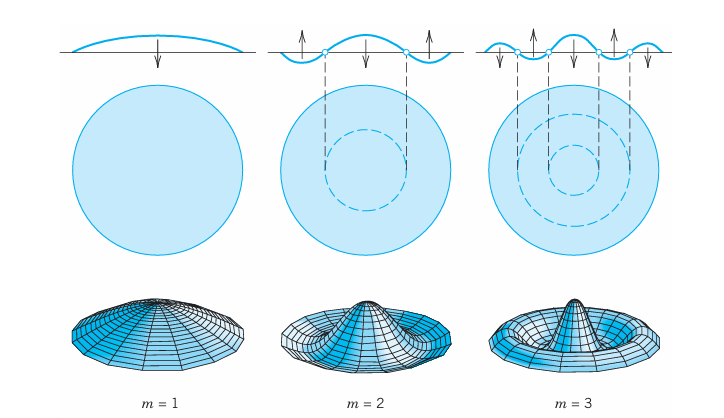
13.16.4 Step 3. Solution of the Entire Problem
To obtain a solution \(u(r, t)\) that also satisfies the initial conditions (Equation 13.124), (Equation 13.125), we may proceed as in the case of the string. That is, we consider the series \[ u(r, t) = \sum_{m=1}^{\infty} W_m(r)G_m(t) = \sum_{m=1}^{\infty} \left( A_m \cos \lambda_m t + B_m \sin \lambda_m t \right) J_0\left( \frac{\alpha_m r}{R} \right) \tag{13.133}\] (leaving aside the problems of convergence and uniqueness). Setting \(t=0\) and using (Equation 13.124), we obtain \[ u(r, 0) = \sum_{m=1}^{\infty} A_m J_0\left( \frac{\alpha_m r}{R} \right) = f(r). \tag{13.134}\]
Thus for the series (Equation 13.133) to satisfy the condition (Equation 13.124), the constants \(A_m\) must be the coefficients of the Fourier–Bessel series (Equation 13.134) that represents \(f(r)\) in terms of \(J_0(\alpha_m r / R)\); that is [see (9) in with \(n=0\), \(a_m = \alpha_m\), and \(x = r\)], \[ A_m = \frac{2}{R^2 J_1^2(\alpha_m)} \int_0^R r f(r) J_0\left( \frac{\alpha_m r}{R} \right) \, dr \quad (m = 1, 2, \dots). \tag{13.135}\]
Differentiability of \(f(r)\) in the interval \(0 \le r \le R\) is sufficient for the existence of the development (Equation 13.134); see Ref. [A13]. The coefficients \(B_m\) in (Equation 13.133) can be determined from (Equation 13.125) in a similar fashion. Numeric values of \(A_m\) and \(B_m\) may be obtained from a CAS or by a numeric integration method, using tables of \(J_0\) and \(J_1\). However, numeric integration can sometimes be avoided, as the following example shows.
13.16.5 Vibrations of a Circular Membrane
Find the vibrations of a circular drumhead of radius 1 ft and density 2 slugs/\(\text{ft}^2\) if the tension is 8 lb/ft, the initial velocity is 0, and the initial displacement is \[ f(r) = 1 - r^2 \text{ [ft]}. \]
Solution. \(c^2 = T/\rho = 8 / 2 = 4 \text{ [ft}^2/\text{sec}^2\text{]}\). Also \(B_m = 0\), since the initial velocity is 0. From (Equation 13.135), since \(R=1\), we obtain \[ A_m = \frac{2}{J_1^2(\alpha_m)} \int_0^1 r(1-r^2) J_0(\alpha_m r) \, dr. \]
We can evaluate this integral by using (21c), , with $ $, that is, \(\frac{d}{ds} [s^ \nu J_ \nu(s)] = s^ \nu J_{ \nu-1}(s)\), which for $ $ gives \(\int s J_0(s) \, ds = s J_1(s)\), and for $ $ gives \(\int s^2 J_1(s) \, ds = s^2 J_2(s)\). Using integration by parts: \[ \int_0^1 r(1-r^2) J_0(\alpha_m r) \, dr = \left. (1-r^2) \frac{r J_1(\alpha_m r)}{\alpha_m} \right|_0^1 + \frac{2}{\alpha_m} \int_0^1 r^2 J_1(\alpha_m r) \, dr = \frac{2}{\alpha_m^3} \int_0^{\alpha_m} s^2 J_1(s) \, ds = \frac{2 J_2(\alpha_m)}{\alpha_m^2}. \]
Thus we obtain \[ A_m = \frac{4 J_2(\alpha_m)}{\alpha_m^2 J_1^2(\alpha_m)} = \frac{8}{\alpha_m^3 J_1(\alpha_m)} \] where the last equality follows from the recurrence relation \(J_0(s) + J_2(s) = \frac{2}{s} J_1(s)\), which for \(s = \alpha_m\) (since \(J_0(\alpha_m) = 0\)) gives \(J_2(\alpha_m) = \frac{2}{\alpha_m} J_1(\alpha_m)\).
Table 9.5 on p. 409 of [GenRef1] gives \(\alpha_m\) and \(J_1(\alpha_m) = -J_0'(\alpha_m)\) by (21b), , with $ $, and compute the coefficients \(A_m\):
| \(m\) | Zeros \(\alpha_m\) | \(J_1(\alpha_m)\) | \(J_2(\alpha_m)\) | \(A_m\) |
|---|---|---|---|---|
| 1 | 2.40483 | 0.51915 | 0.43176 | 1.10801 |
| 2 | 5.52008 | -0.34026 | -0.12328 | -0.13978 |
| 3 | 8.65373 | 0.27145 | 0.06274 | 0.04548 |
| 4 | 11.79153 | -0.23246 | -0.03943 | -0.02099 |
| 5 | 14.93092 | 0.20655 | 0.02767 | 0.01164 |
| 6 | 18.07106 | -0.18773 | -0.02078 | -0.00722 |
| 7 | 21.21164 | 0.17327 | 0.01634 | 0.00484 |
| 8 | 24.35247 | -0.16170 | -0.01328 | -0.00343 |
| 9 | 27.49348 | 0.15218 | 0.01107 | 0.00253 |
| 10 | 30.63461 | -0.14417 | -0.00941 | -0.00193 |
Thus \[ f(r) = 1.108 J_0(2.4048r) - 0.140 J_0(5.5201r) + 0.045 J_0(8.6537r) - \dots \]
We see that the coefficients decrease relatively slowly. The sum of the explicitly given coefficients in the table is 0.99915. The sum of all the coefficients should be 1. (Why?) Hence by the Leibniz test in the partial sum of those terms gives about three correct decimals of the amplitude \(f(r)\).
Since \(\lambda_m = c k_m = c\alpha_m / R = 2\alpha_m\), from (Equation 13.133) we thus obtain the solution (with \(r\) measured in feet and \(t\) in seconds) \[ u(r, t) = 1.108 J_0(2.4048r) \cos 4.8097t - 0.140 J_0(5.5201r) \cos 11.0402t + 0.045 J_0(8.6537r) \cos 17.3075t - \dots \]
In Figure 13.24, \(m=1\) gives an idea of the motion of the first term of our series, \(m=2\) of the second term, and \(m=3\) of the third term, so that we can “see” our result about as well as for a violin string in Section 13.4.
13.17 PROBLEM SET 12.10
1–3 RADIAL SYMMETRY
1. Why did we introduce polar coordinates in this section?
2. Radial symmetry reduces (Equation 13.120) to \(\nabla^2 u = u_{rr} + \frac{1}{r} u_r\). Derive this directly from \(\nabla^2 u = u_{xx} + u_{yy}\) using \(r = \sqrt{x^2 + y^2}\). Show that the only solution of \(\nabla^2 u = 0\) depending only on \(r\) is \(u = a \ln r + b\) with arbitrary constants \(a\) and \(b\).
3. Alternative form of (Equation 13.120). Show that (Equation 13.120) can be written as \(\nabla^2 u = \frac{1}{r} (r u_r)_r + \frac{1}{r^2} u_{\theta\theta}\), a form that is often practical.
4. TEAM PROJECT. Series for Dirichlet and Neumann Problems
Show that \(u_n = r^n \cos n\theta\), \(u_n = r^n \sin n\theta\), \(n = 0, 1, \dots\), are solutions of Laplace’s equation \(\nabla^2 u = 0\) with \(\nabla^2 u\) given by (Equation 13.120). (What would \(u_n\) be in Cartesian coordinates? Experiment with small \(n\).)
Dirichlet problem. Assuming that termwise differentiation is permissible, show that a solution of the Laplace equation in the disk \(r \le R\) satisfying the boundary condition \(u(R, \theta) = f(\theta)\) (\(R\) and \(f\) given) is \[ u(r, \theta) = a_0 + \sum_{n=1}^{\infty} \left(\frac{r}{R}\right)^n (a_n \cos n\theta + b_n \sin n\theta) \tag{13.136}\] where \(a_n, b_n\) are the Fourier coefficients of \(f\) (see ).
Dirichlet problem. Solve the Dirichlet problem using (Equation 13.136) if \(R=1\) and the boundary values are \(u(\theta) = -100\text{ volts}\) if \(-\pi < \theta < 0\), and \(100\text{ volts}\) if \(0 < \theta < \pi\). (Sketch this disk, indicate the boundary values.)
Neumann problem. Show that the solution of the Neumann problem \(\nabla^2 u = 0\) in \(r < R\), \(u_r(R, \theta) = f(\theta)\) (where \(u_r = \partial u / \partial r\) is the normal derivative) is \[ u(r, \theta) = A_0 + \sum_{n=1}^{\infty} r^n (A_n \cos n\theta + B_n \sin n\theta) \] with arbitrary \(A_0\) and \[ A_n = \frac{1}{\pi n R^{n-1}} \int_{-\pi}^{\pi} f(\theta) \cos n\theta \, d\theta, \quad B_n = \frac{1}{\pi n R^{n-1}} \int_{-\pi}^{\pi} f(\theta) \sin n\theta \, d\theta. \]
Compatibility condition. Show that the Neumann problem has a solution if and only if the boundary function \(f(\theta)\) satisfies the compatibility condition \[ \int_{-\pi}^{\pi} f(\theta) \, d\theta = 0. \]
Neumann problem. Solve \(\nabla^2 u = 0\) in the annulus \(1 \le r \le 2\) if \(u_r(1, \theta) = \sin \theta\), \(u_r(2, \theta) = 0\).
5–8 ELECTROSTATIC POTENTIAL. STEADY-STATE HEAT PROBLEMS
Using (Equation 13.136), find the potential (equivalently: the steady-state temperature) in the disk \(r \le 1\) if the boundary values are:
5. \(u(1, \theta) = 220 \cos 3\theta\)
6. \(u(1, \theta) = 110\) if \(-\pi/2 < \theta < \pi/2\) and 0 otherwise.
7. \(u(1, \theta) = 110 |\theta|\) if \(-\pi < \theta < \pi\)
8. \(u(1, \theta) = \theta\) if \(-\pi/2 < \theta < \pi/2\) and 0 otherwise.
9. CAS EXPERIMENT. Equipotential Lines. Guess what the equipotential lines \(u(r, \theta) = \text{const}\) in Probs. 5 and 7 may look like. Then graph some of them, using partial sums of the series.
10. Semidisk. Find the electrostatic potential in the semidisk \(r \le 1\), \(0 \le \theta \le \pi\) which equals \(110\theta(\pi-\theta)\) on the semicircle \(r = 1\) and 0 on the segment \(-1 \le x \le 1\).
11. Semicircular plate. Find the steady-state temperature in a semicircular thin plate \(r \le a\), \(0 \le \theta \le \pi\) with the diameter kept at \(0^\circ\text{C}\) and the semicircle kept at constant temperature \(u_0\).
CIRCULAR MEMBRANE
12. CAS PROJECT. Normal Modes. Graph the normal modes \(u_1, u_2, u_3\) as in Figure 13.24.
Write a program for calculating the \(A_m\)’s in Example 1 and extend the table to \(m = 15\). Verify numerically that \(\alpha_m \approx (m - 0.25)\pi\) and compute the error for \(m = 1, \dots, 10\).
Graph the initial deflection \(f(r)\) in Example 1 as well as the first three partial sums of the series. Comment on accuracy.
Compute the radii of the nodal lines of \(u_2, u_3, u_4\) when \(R=1\). How do these values compare to those of the nodes of the vibrating string of length 1? Can you establish any empirical laws by experimentation with further \(u_m\)?
13. Frequency. What happens to the frequency of an eigenfunction of a drum if you double the tension?
14. Size of a drum. A small drum should have a higher fundamental frequency than a large one, tension and density being the same. How does this follow from our formulas?
15. Tension. Find a formula for the tension required to produce a desired fundamental frequency \(f_1\) of a drum.
16. Why is \(A_1 + A_2 + \dots = 1\) in Example 1? Compute the first few partial sums until you get 3-digit accuracy. What does this problem mean in the field of music?
17. Nodal lines. Is it possible that for fixed \(c\) and \(R\) two or more \(u_m\) see ( 13.132 with different nodal lines correspond to the same eigenvalue? (Give a reason.)
18. Nonzero initial velocity is more of theoretical interest because it is difficult to obtain experimentally. Show that for (Equation 13.133) to satisfy (Equation 13.125) we must have \[ B_m = K_m \int_0^R r g(r) J_0\left( \frac{\alpha_m r}{R} \right) \, dr, \quad K_m = \frac{2}{c\alpha_m R J_1^2(\alpha_m)}. \]
**VIBRATIONS OF A CIRCULAR MEMBRANE DEPENDING ON BOTH r AND *
19. (Separations). Show that substitution of \(u = F(r, \theta)G(t)\) into the wave equation (Equation 13.121), that is, \[ u_{tt} = c^2 \left( u_{rr} + \frac{1}{r} u_r + \frac{1}{r^2} u_{\theta\theta} \right) \tag{13.137}\] gives an ODE and a PDE: \[ \ddot{G} + \lambda^2 G = 0 \quad \text{where} \quad \lambda = ck, \tag{13.138}\] \[ F_{rr} + \frac{1}{r} F_r + \frac{1}{r^2} F_{\theta\theta} + k^2 F = 0. \tag{13.139}\]
Show that the PDE can now be separated by substituting \(F(r, \theta) = W(r)Q(\theta)\), giving \[ Q'' + n^2 Q = 0, \tag{13.140}\] \[ r^2 W'' + r W' + (k^2 r^2 - n^2) W = 0. \tag{13.141}\]
20. Periodicity. Show that \(Q(\theta)\) must be periodic with period \(2\pi\) and, therefore, \(n = 0, 1, 2, \dots\) in (Equation 13.140) and (Equation 13.141). Show that this yields the solutions \(Q_n = \cos n\theta, Q_n^* = \sin n\theta, W_n = J_n(kr)\), \(n = 0, 1, \dots\).
21. Boundary condition. Show that the boundary condition \[ u(R, \theta, t) = 0 \tag{13.142}\] leads to \(k = k_{nm} = \alpha_{nm} / R\), where \(s = \alpha_{nm}\) is the \(m\)th positive zero of \(J_n(s)\).
22. Show that solutions of (Equation 13.137) satisfying (Equation 13.142) are (see Figure 13.25) \[ u_{nm} = \left( A_{nm} \cos c k_{nm} t + B_{nm} \sin c k_{nm} t \right) J_n(k_{nm} r) \cos n\theta \tag{13.143}\] \[ u_{nm}^* = \left( A_{nm}^* \cos c k_{nm} t + B_{nm}^* \sin c k_{nm} t \right) J_n(k_{nm} r) \sin n\theta. \tag{13.144}\]
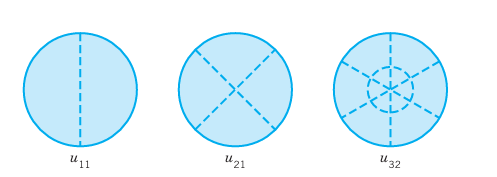
23. Initial condition. Show that \(u_t(r, \theta, 0) = 0\) gives \(B_{nm} = 0\), \(B_{nm}^* = 0\) in (Equation 13.143), (Equation 13.144).
24. Show that \(u_{0m}^* = 0\) and \(u_{0m}\) is identical with (Equation 13.132) in this section.
25. Semicircular membrane. Show that \(u_{11}\) represents the fundamental mode of a semicircular membrane and find the corresponding frequency when \(c^2 = 1\) and \(R = 1\).
13.18 Laplace’s Equation in Cylindrical and Spherical Coordinates. Potential
One of the most important PDEs in physics and engineering applications is Laplace’s equation, given by \[ \nabla^2 u = u_{xx} + u_{yy} + u_{zz} = 0. \tag{13.145}\]
Here, \(x, y, z\) are Cartesian coordinates in space, \(u_{xx} = \partial^2 u / \partial x^2\), etc. The expression \(\nabla^2 u\) is called the Laplacian of \(u\). The theory of the solutions of (Equation 13.145) is called potential theory. Solutions of (Equation 13.145) that have continuous second partial derivatives are known as harmonic functions.
Laplace’s equation occurs mainly in gravitation, electrostatics, steady-state heat flow (Section 13.8), and fluid flow.
Recall from that the gravitational potential \(u(x, y, z)\) at a point \((x, y, z)\) resulting from a single mass located at a point \((X, Y, Z)\) is \[ u(x, y, z) = \frac{c}{r} = \frac{c}{\sqrt{(x-X)^2 + (y-Y)^2 + (z-Z)^2}} \quad (r eq 0) \tag{13.146}\] and \(u\) satisfies (Equation 13.145). Similarly, if mass is distributed in a region \(T\) in space with density \(\rho(X, Y, Z)\), its potential at a point \((x, y, z)\) not occupied by mass is \[ u(x, y, z) = k \iiint_T \frac{\rho(X, Y, Z)}{r} \, dX \, dY \, dZ. \tag{13.147}\]
It satisfies (Equation 13.145) because \(\nabla^2(1/r) = 0\) () and \(\rho\) is not a function of \(x, y, z\).
Practical problems involving Laplace’s equation are boundary value problems in a region \(T\) in space with boundary surface \(S\). Such problems can be grouped into three types (see also Section 13.9 for the two-dimensional case):
- (I) First boundary value problem or Dirichlet problem if \(u\) is prescribed on \(S\).
- (II) Second boundary value problem or Neumann problem if the normal derivative \(u_n = \partial u / \partial n\) is prescribed on \(S\).
- (III) Third or mixed boundary value problem or Robin problem if \(u\) is prescribed on a portion of \(S\) and \(u_n\) on the remaining portion of \(S\).
In general, when we want to solve a boundary value problem, we have to first select the appropriate coordinates in which the boundary surface \(S\) has a simple representation. Here are some examples followed by some applications.
13.18.1 Laplacian in Cylindrical Coordinates
The first step in solving a boundary value problem is generally the introduction of coordinates in which the boundary surface \(S\) has a simple representation. Cylindrical symmetry (a cylinder as a region \(T\)) calls for cylindrical coordinates \(r, \theta, z\) related to \(x, y, z\) by \[ x = r \cos \theta, \quad y = r \sin \theta, \quad z = z \quad (r \ge 0, \ 0 \le \theta \le 2\pi) \tag{13.148}\] (see Figure 13.26). For these we get \(\nabla^2 u\) immediately by adding \(u_{zz}\) to (Equation 13.120) in Section 13.16; thus, \[ \nabla^2 u = \frac{\partial^2 u}{\partial r^2} + \frac{1}{r} \frac{\partial u}{\partial r} + \frac{1}{r^2} \frac{\partial^2 u}{\partial \theta^2} + \frac{\partial^2 u}{\partial z^2}. \tag{13.149}\]
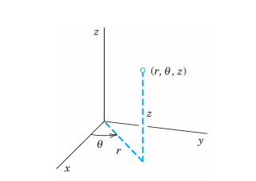
13.18.2 Laplacian in Spherical Coordinates
Spherical symmetry (a ball as region \(T\) bounded by a sphere \(S\)) requires spherical coordinates \(r, \theta, \phi\) related to \(x, y, z\) by \[ x = r \cos \theta \sin \phi, \quad y = r \sin \theta \sin \phi, \quad z = r \cos \phi \quad (r \ge 0, \ 0 \le \theta \le 2\pi, \ 0 \le \phi \le \pi) \tag{13.150}\] (see Figure 13.27). Using the chain rule, we obtain \(\nabla^2 u\) in spherical coordinates: \[ \nabla^2 u = \frac{\partial^2 u}{\partial r^2} + \frac{2}{r} \frac{\partial u}{\partial r} + \frac{1}{r^2} \frac{\partial^2 u}{\partial \phi^2} + \frac{\cot \phi}{r^2} \frac{\partial u}{\partial \phi} + \frac{1}{r^2 \sin^2 \phi} \frac{\partial^2 u}{\partial \theta^2}. \tag{13.151}\]
It is sometimes practical to write (Equation 13.151) in the form \[ \nabla^2 u = \frac{1}{r^2} \frac{\partial}{\partial r} \left( r^2 \frac{\partial u}{\partial r} \right) + \frac{1}{r^2 \sin \phi} \frac{\partial}{\partial \phi} \left( \sin \phi \frac{\partial u}{\partial \phi} \right) + \frac{1}{r^2 \sin^2 \phi} \frac{\partial^2 u}{\partial \theta^2}. \tag{13.152}\]
Remark on Notation. Equation (Equation 13.150) is used in calculus and extends the familiar notation for polar coordinates. Unfortunately, some books use \(\theta\) and \(\phi\) interchanged, which is common in some physics texts and European literature.
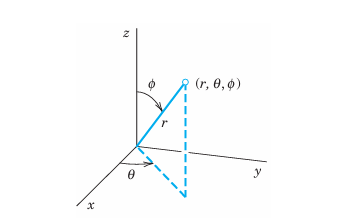
13.18.3 Boundary Value Problem in Spherical Coordinates
We shall solve the following Dirichlet problem in spherical coordinates: \[ \nabla^2 u = \frac{1}{r^2} \frac{\partial}{\partial r} \left( r^2 \frac{\partial u}{\partial r} \right) + \frac{1}{r^2 \sin \phi} \frac{\partial}{\partial \phi} \left( \sin \phi \frac{\partial u}{\partial \phi} \right) = 0. \tag{13.153}\] \[ u(R, \phi) = f(\phi) \tag{13.154}\] \[ \lim_{r \to \infty} u(r, \phi) = 0. \tag{13.155}\]
The PDE (Equation 13.153) follows from (Equation 13.152) by assuming that the solution \(u\) will not depend on \(\theta\) because the Dirichlet condition (Equation 13.154) is independent of \(\theta\). This may be an electrostatic potential (or a temperature) \(f(\phi)\) at which the sphere \(S: r = R\) is kept. Condition (Equation 13.155) means that the potential at infinity will be zero.
13.18.3.1 Separating Variables
We substitute \(u(r, \phi) = G(r)H(\phi)\) into (Equation 13.153). Multiplying by \(r^2\), making the substitution, and then dividing by \(GH\), we obtain \[ \frac{1}{G} \frac{d}{dr} \left( r^2 \frac{dG}{dr} \right) = -\frac{1}{H \sin \phi} \frac{d}{d\phi} \left( \sin \phi \frac{dH}{d\phi} \right). \]
By the usual argument both sides must be equal to a constant \(k\). Thus we get the two ODEs \[ r^2 \frac{d^2 G}{dr^2} + 2r \frac{dG}{dr} - kG = 0 \tag{13.156}\] and \[ \frac{1}{\sin \phi} \frac{d}{d\phi} \left( \sin \phi \frac{dH}{d\phi} \right) + kH = 0. \tag{13.157}\]
The solutions of (Equation 13.156) will take a simple form if we set \(k = n(n+1)\). Then (Equation 13.156) becomes \[ r^2 G'' + 2r G' - n(n+1)G = 0. \tag{13.158}\]
This is an Euler–Cauchy equation. Substituting \(G = r^\alpha\) and dropping the common factor \(r^\alpha\) gives \[ \alpha(\alpha-1) + 2\alpha - n(n+1) = \alpha^2 + \alpha - n(n+1) = 0. \] The roots are \(\alpha = n\) and \(\alpha = -(n+1)\). Hence solutions are \[ G_n(r) = r^n \quad \text{and} \quad G_n^*(r) = \frac{1}{r^{n+1}}. \tag{13.159}\]
We now solve (Equation 13.157). Setting \(\cos \phi = w\), we have \(\sin^2 \phi = 1 - w^2\) and \[ \frac{d}{d\phi} = \frac{d}{dw} \frac{dw}{d\phi} = -\sin \phi \frac{d}{dw}. \] Consequently, (Equation 13.157) with \(k = n(n+1)\) takes the form \[ \frac{d}{dw} \left[ (1 - w^2) \frac{dH}{dw} \right] + n(n+1)H = 0 \tag{13.160}\] or, written out \[ (1-w^2) \frac{d^2 H}{dw^2} - 2w \frac{dH}{dw} + n(n+1)H = 0. \tag{13.161}\]
This is Legendre’s equation (see ). For integer \(n = 0, 1, 2, \dots\) the Legendre polynomials \[ H_n(\phi) = P_n(w) = P_n(\cos \phi) \quad (n = 0, 1, \dots) \] are solutions of Legendre’s equation (Equation 13.160). We thus obtain the following two sequences of solutions \(u = GH\) of Laplace’s equation (Equation 13.153), with constant \(A_n\) and \(B_n\), where \(n = 0, 1, \dots\): \[ u_n(r, \phi) = A_n r^n P_n(\cos \phi) \quad \text{and} \quad u_n^*(r, \phi) = \frac{B_n}{r^{n+1}} P_n(\cos \phi). \tag{13.162}\]
13.18.4 Use of Fourier–Legendre Series
13.18.4.1 Interior Problem: Potential Within the Sphere S
We consider a series of terms from (Equation 13.162) (left), \[ u(r, \phi) = \sum_{n=0}^{\infty} A_n r^n P_n(\cos \phi) \quad (r \le R). \tag{13.163}\]
Since \(S\) is given by \(r = R\), for (Equation 13.163) to satisfy the Dirichlet condition (Equation 13.154) on the sphere \(S\), we must have \[ u(R, \phi) = \sum_{n=0}^{\infty} A_n R^n P_n(\cos \phi) = f(\phi); \tag{13.164}\] that is, (Equation 13.164) must be the Fourier–Legendre series of \(f(\phi)\). From (7) in we get the coefficients: \[ A_n R^n = \frac{2n+1}{2} \int_{-1}^1 f(w) P_n(w) \, dw. \]
Since \(w = \cos \phi\), \(dw = -\sin \phi \, d\phi\), and the limits of integration \(-1\) and \(1\) correspond to \(\phi = \pi\) and \(\phi = 0\), respectively, we also obtain \[ A_n = \frac{2n+1}{2 R^n} \int_0^\pi f(\phi) P_n(\cos \phi) \sin \phi \, d\phi, \quad n = 0, 1, 2, \dots \tag{13.165}\]
If \(f(\phi)\) and \(f'(\phi)\) are piecewise continuous on the interval \(0 \le \phi \le \pi\), then the series (Equation 13.163) with coefficients (Equation 13.165) solves our problem for points inside the sphere because it can be shown that under these continuity assumptions termwise differentiation is justified.
13.18.4.2 Exterior Problem: Potential Outside the Sphere S
Outside the sphere we cannot use the functions \(u_n\) in (Equation 13.162) because they do not satisfy (Equation 13.155) (they blow up as \(r \to \infty\)). But we can use the \(u_n^*\) in (Equation 13.162) (right), which do satisfy (Equation 13.155) (they approach 0 as \(r \to \infty\)). Proceeding as before leads to the solution of the exterior problem \[ u(r, \phi) = \sum_{n=0}^{\infty} \frac{B_n}{r^{n+1}} P_n(\cos \phi) \quad (r > R) \tag{13.166}\] satisfying (Equation 13.153), (Equation 13.154), (Equation 13.155), with coefficients \[ B_n = \frac{2n+1}{2} R^{n+1} \int_0^\pi f(\phi) P_n(\cos \phi) \sin \phi \, d\phi \quad (n = 0, 1, 2, \dots). \tag{13.167}\]
The next example illustrates all this for a sphere of radius 1 consisting of two hemispheres that are separated by a small strip of insulating material along the equator, so that these hemispheres can be kept at different potentials (110 V and 0 V).
13.18.5 Spherical Capacitor
Find the potential inside and outside a spherical capacitor consisting of two metallic hemispheres of radius 1 ft separated by a small slit for reasons of insulation, if the upper hemisphere is kept at 110 V and the lower is grounded (Figure 13.28).
Solution. The given boundary condition is \[ f(\phi) = \begin{cases} 110 & \text{if } 0 \le \phi < \pi/2 \ 0 & \text{if } \pi/2 < \phi \le \pi. \end{cases} \]
Since \(R = 1\), we thus obtain from (Equation 13.165) \[ A_n = \frac{2n+1}{2} \int_0^{\pi/2} 110 P_n(\cos \phi) \sin \phi \, d\phi = 55 (2n+1) \int_0^1 P_n(w) \, dw \] where \(w = \cos \phi\). We can evaluate this integral by using (11) in , obtaining \[ A_n = 55 (2n+1) \sum_{m=0}^M (-1)^m \frac{(2n-2m)!}{2^n m! (n-m)! (n-2m)!} \int_0^1 w^{n-2m} \, dw \] where \(M = n/2\) for even \(n\) and \((n-1)/2\) for odd \(n\). The integral equals \(1 / (n-2m+1)\). Thus \[ A_n = \frac{55(2n+1)}{2^n} \sum_{m=0}^M (-1)^m \frac{(2n-2m)!}{m! (n-m)! (n-2m+1)!}. \tag{13.168}\]
Taking \(n=0\), we get \(A_0 = 55\) (since \(0! = 1\)). For \(n=1, 2, 3, \dots\) we get \[ A_1 = \frac{165}{2} \times \frac{2!}{0! 1! 2!} = \frac{165}{2}, \] \[ A_2 = \frac{275}{4} \left[ \frac{4!}{0! 2! 3!} - \frac{2!}{1! 1! 1!} \right] = 0, \] \[ A_3 = -\frac{385}{8}, \quad \text{etc.} \]
Hence the potential (Equation 13.163) inside the sphere is (since \(P_0 = 1\)) \[ u(r, \phi) = 55 + \frac{165}{2} r P_1(\cos \phi) - \frac{385}{8} r^3 P_3(\cos \phi) + \dots \tag{13.169}\] with \(P_1 = \cos \phi\), \(P_3 = \frac{1}{2}(5 \cos^3 \phi - 3 \cos \phi)\), etc. Since \(R = 1\), we see from (Equation 13.165) and (Equation 13.167) that \(B_n = A_n\), and (Equation 13.166) thus gives the potential outside the sphere \[ u(r, \phi) = \frac{55}{r} + \frac{165}{2r^2} P_1(\cos \phi) - \frac{385}{8r^4} P_3(\cos \phi) + \dots \tag{13.170}\]
Partial sums of these series can now be used for computing approximate values of the inner and outer potential. Also, it is interesting to see that far away from the sphere the potential is approximately that of a point charge, namely, \(55/r\). (Compare with Theorem 3 in .) See Figure 13.29.
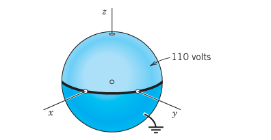
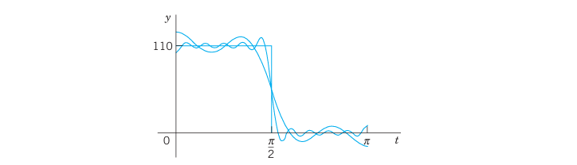
13.18.6 Simpler Cases
The technicalities encountered in cases that are similar to the one shown in Example 1 can often be avoided. For instance, find the potential inside the sphere \(S: r = R = 1\) when \(S\) is kept at the potential \(f(\phi) = \cos 2\phi\).
Solution. Let \(w = \cos \phi\). We have \(\cos 2\phi = 2 \cos^2 \phi - 1 = 2w^2 - 1\). Expressed in terms of Legendre polynomials: \[ P_2(w) = \frac{1}{2}(3w^2 - 1) \implies w^2 = \frac{2}{3} P_2(w) + \frac{1}{3}. \] Hence \[ f(\phi) = 2 \left[ \frac{2}{3} P_2(w) + \frac{1}{3} \right] - 1 = \frac{4}{3} P_2(w) - \frac{1}{3} = \frac{4}{3} P_2(\cos \phi) - \frac{1}{3} P_0(\cos \phi). \]
By comparing this with (Equation 13.164) with \(R = 1\) we see that \(A_0 = -1/3, A_2 = 4/3\) and all other \(A_n\) are 0. Hence the potential in the interior of the sphere is \[ u(r, \phi) = -\frac{1}{3} P_0(\cos \phi) + \frac{4}{3} r^2 P_2(\cos \phi) = -\frac{1}{3} + \frac{2}{3} r^2 (3 \cos^2 \phi - 1). \]
13.19 PROBLEM SET 12.11
1. Spherical coordinates. Derive (Equation 13.151) from \(\nabla^2 u\) in Cartesian coordinates.
2. Cylindrical coordinates. Verify (Equation 13.149) by transforming \(\nabla^2 u\) back into Cartesian coordinates.
3. Sketch \(P_n(\cos \phi)\), \(0 \le \phi \le \pi\), for \(n = 0, 1, 2\).
4. Zero surfaces. Find the surfaces on which \(u_1, u_2, u_3\) in (Equation 13.162) are zero.
5. CAS PROBLEM. Partial Sums. In Example 1 in the text verify the values of \(A_0, A_1, A_2, A_3\) and compute \(A_4, \dots, A_{10}\). Try to find out graphically how well the corresponding partial sums of (Equation 13.169) approximate the given boundary function.
6. CAS EXPERIMENT. Gibbs Phenomenon. Study the Gibbs phenomenon in Example 1 (Figure 13.29) graphically.
7. Verify that \(u_n\) and \(u_n^*\) in (Equation 13.162) are solutions of (Equation 13.153).
8–15 POTENTIALS DEPENDING ONLY ON r
8. Dimension 3. Verify that the potential \(u = c/r\), \(r = \sqrt{x^2+y^2+z^2}\) satisfies Laplace’s equation in spherical coordinates.
9. Spherical symmetry. Show that the only solution of Laplace’s equation depending only on \(r = \sqrt{x^2+y^2+z^2}\) is \(u = c/r + k\) with constant \(c\) and \(k\).
10. Cylindrical symmetry. Show that the only solution of Laplace’s equation depending only on \(r = \sqrt{x^2+y^2}\) is \(u = c \ln r + k\).
11. Verification. Substituting \(u(r)\) with \(r\) as in Prob. 9 into \(u_{xx} + u_{yy} + u_{zz} = 0\), verify that \(u'' + \frac{2}{r} u' = 0\), in agreement with (Equation 13.151).
12. Dirichlet problem. Find the electrostatic potential between coaxial cylinders of radii \(r_1 = 2\text{ cm}\) and \(r_2 = 4\text{ cm}\) kept at the potentials \(U_1 = 220\text{ V}\) and \(U_2 = 140\text{ V}\), respectively.
13. Dirichlet problem. Find the electrostatic potential between two concentric spheres of radii \(r_1 = 2\text{ cm}\) and \(r_2 = 4\text{ cm}\) kept at the potentials \(U_1 = 220\text{ V}\) and \(U_2 = 140\text{ V}\), respectively. Sketch and compare the equipotential lines in Probs. 12 and 13. Comment.
14. Heat problem. If the surface of the ball \(r^2 = x^2+y^2+z^2 \le R^2\) is kept at temperature zero and the initial temperature in the ball is \(f(r)\), show that the temperature \(u(r, t)\) in the ball is a solution of \(u_t = c^2 (u_{rr} + 2u_r / r)\) satisfying the conditions \(u(R, t) = 0\), \(u(r, 0) = f(r)\). Show that setting \(v = ru\) gives \(v_t = c^2 v_{rr}\), \(v(0, t) = 0\), \(v(R, t) = 0\), \(v(r, 0) = r f(r)\), and solve the resulting problem by separating variables.
15. What are the analogs of Probs. 12 and 13 in heat conduction?
16–20 BOUNDARY VALUE PROBLEMS IN SPHERICAL COORDINATES
Find the potential in the interior of the sphere \(r < R = 1\) if the interior is free of charges and the potential on the sphere is:
16. \(f(\phi) = \cos \phi\)
17. \(f(\phi) = 1\)
18. \(f(\phi) = 1 - \cos^2 \phi\)
19. \(f(\phi) = \cos 2\phi\)
20. \(f(\phi) = 10 \cos^3 \phi - 3 \cos^2 \phi - 5 \cos \phi - 1\)
21. Point charge. Show that in Prob. 17 the potential exterior to the sphere is the same as that of a point charge at the origin.
22. Exterior potential. Find the potentials exterior to the sphere in Probs. 16 and 19.
23. Plane intersections. Sketch the intersections of the equipotential surfaces in Prob. 16 with \(xz\)-plane.
24. TEAM PROJECT. Transmission Line and Related PDEs. Consider a long cable or telephone wire (Figure 13.30) that is imperfectly insulated, so that leaks occur along the entire length of the cable. The source \(S\) of the current \(i(x, t)\) in the cable is at \(x=0\), the receiving end \(T\) at \(x=l\). The current flows from \(S\) to \(T\) and through the load, and returns to the ground. Let the constants \(R, L, C\), and \(G\) denote the resistance, inductance, capacitance to ground, and conductance to ground, respectively, of the cable per unit length.
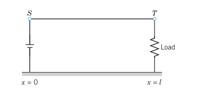
Show that (“first transmission line equation”) \[ -\frac{\partial u}{\partial x} = R i + L \frac{\partial i}{\partial t} \] where \(u(x, t)\) is the potential in the cable. Hint: Apply Kirchhoff’s voltage law to a small portion of the cable between \(x\) and \(x + \Delta x\).
Show that for the cable in (a) (“second transmission line equation”) \[ -\frac{\partial i}{\partial x} = G u + C \frac{\partial u}{\partial t}. \] Hint: Use Kirchhoff’s current law.
Second-order PDEs. Show that elimination of \(i\) or \(u\) from the transmission line equations leads to \[ u_{xx} = L C u_{tt} + (R C + G L) u_t + R G u, \] \[ i_{xx} = L C i_{tt} + (R C + G L) i_t + R G i. \]
Telegraph equations. For a submarine cable, \(G\) is negligible and the frequencies are low. Show that this leads to the telegraph equations \[ u_{xx} = R C u_t, \quad i_{xx} = R C i_t. \] Solve the first of them, assuming that the initial potential is \(U_0 \sin(\pi x / l)\), and \(u(0, t) = 0\), \(u(l, t) = 0\) for all \(t\).
High-frequency line equations. Show that in the case of alternating currents of high frequencies the equations in (c) can be approximated by the wave equations \[ u_{xx} = L C u_{tt}, \quad i_{xx} = L C i_{tt}. \]
25. Reflection in a sphere. If \(u(r, \theta, \phi)\) satisfies \(\nabla^2 u = 0\), show that \(v(r, \theta, \phi) = \frac{1}{r} u\left(\frac{1}{r}, \theta, \phi\right)\) satisfies \(\nabla^2 v = 0\).
13.20 Solution of PDEs by Laplace Transforms
Readers familiar with may wonder whether Laplace transforms can also be used for solving partial differential equations. The answer is yes, particularly if one of the independent variables ranges over the positive axis. The steps to obtain a solution are similar to those in . For a PDE in two variables they are as follows.
- Take the Laplace transform with respect to one of the two variables, usually \(t\). This gives an ODE for the transform of the unknown function. This is so since the derivatives of this function with respect to the other variable slip into the transformed equation. The latter also incorporates the given boundary and initial conditions.
- Solving that ODE, obtain the transform of the unknown function.
- Taking the inverse transform, obtain the solution of the given problem.
If the coefficients of the given equation do not depend on \(t\), the use of Laplace transforms will simplify the problem.
We explain the method in terms of a typical example.
13.20.1 Semi-Infinite String
Find the displacement \(w(x, t)\) of an elastic string subject to the following conditions. (We write \(w\) since we need \(u\) to denote the unit step function.)
- The string is initially at rest on the \(x\)-axis from \(x=0\) to \(\infty\) (“semi-infinite string”).
- For \(t \ge 0\) the left end of the string (\(x=0\)) is moved in a given fashion, namely, according to a single sine wave \[ w(0, t) = f(t) = \begin{cases} \sin t & \text{if } 0 \le t \le 2\pi \ 0 & \text{otherwise} \end{cases} \] (see Figure 13.31).
- Furthermore, \(\lim_{x \to \infty} w(x, t) = 0\) for \(t \ge 0\).
Of course there is no infinite string, but our model describes a long string or rope (of negligible weight) with its right end fixed far out on the \(x\)-axis.
Solution. We have to solve the wave equation (Section 13.3) \[ \frac{\partial^2 w}{\partial t^2} = c^2 \frac{\partial^2 w}{\partial x^2}, \quad c^2 = \frac{T}{\rho} \tag{13.171}\] for positive \(x\) and \(t\), subject to the boundary conditions \[ w(0, t) = f(t), \quad \lim_{x \to \infty} w(x, t) = 0 \quad (t \ge 0) \tag{13.172}\] with \(f\) as given above, and the initial conditions \[ w(x, 0) = 0, \quad \left. \frac{\partial w}{\partial t} \right|_{t=0} = 0. \tag{13.173}\]
We take the Laplace transform with respect to \(t\). By (2) in , \[ \mathcal{L}\left\{ \frac{\partial^2 w}{\partial t^2} \right\} = s^2 \mathcal{L}\{w\} - s w(x, 0) - w_t(x, 0) = c^2 \mathcal{L}\left\{ \frac{\partial^2 w}{\partial x^2} \right\}. \]
The expression \(-s w(x, 0) - w_t(x, 0)\) drops out because of (Equation 13.173). On the right we assume that we may interchange integration and differentiation. Then \[ \mathcal{L}\left\{ \frac{\partial^2 w}{\partial x^2} \right\} = \int_0^{\infty} e^{-st} \frac{\partial^2 w}{\partial x^2} \, dt = \frac{\partial^2}{\partial x^2} \int_0^{\infty} e^{-st} w(x, t) \, dt = \frac{\partial^2}{\partial x^2} \mathcal{L}\{w(x, t)\}. \]
Writing \(W(x, s) = \mathcal{L}\{w(x, t)\}\), we thus obtain \[ s^2 W = c^2 \frac{\partial^2 W}{\partial x^2}, \quad \text{thus} \quad \frac{\partial^2 W}{\partial x^2} - \frac{s^2}{c^2} W = 0. \]
Since this equation contains only a derivative with respect to \(x\), it may be regarded as an ordinary differential equation for \(W(x, s)\) considered as a function of \(x\). A general solution is \[ W(x, s) = A(s) e^{sx/c} + B(s) e^{-sx/c}. \tag{13.174}\]
From (Equation 13.172) we obtain, writing \(F(s) = \mathcal{L}\{f(t)\}\), \[ W(0, s) = \mathcal{L}\{w(0, t)\} = \mathcal{L}\{f(t)\} = F(s). \]
Assuming that we can interchange integration and taking the limit, we have \[ \lim_{x \to \infty} W(x, s) = \lim_{x \to \infty} \int_0^{\infty} e^{-st} w(x, t) \, dt = \int_0^{\infty} e^{-st} \lim_{x \to \infty} w(x, t) \, dt = 0. \]
This implies \(A(s) = 0\) in (Equation 13.174) because \(c > 0\), so that for every fixed positive \(s\) the function \(e^{sx/c}\) increases as \(x\) increases. Hence we have \[ W(0, s) = B(s) = F(s), \] so that (Equation 13.174) becomes \[ W(x, s) = F(s) e^{-sx/c}. \]
From the second shifting theorem () with \(a = x/c\) we obtain the inverse transform \[ w(x, t) = f\left(t - \frac{x}{c}\right) u\left(t - \frac{x}{c}\right) \tag{13.175}\] (see Figure 13.32), that is, \[ w(x, t) = \begin{cases} \sin\left(t - \frac{x}{c}\right) & \text{if } \frac{x}{c} \le t \le \frac{x}{c} + 2\pi \ 0 & \text{otherwise}. \end{cases} \]
This is a single sine wave traveling to the right with speed \(c\). Note that a point \(x\) remains at rest until \(t = x/c\), the time needed to reach that \(x\) if one starts at \(t = 0\) and travels with speed \(c\). The result agrees with our physical intuition. We leave the verification that (Equation 13.175) satisfies the given conditions to the student.
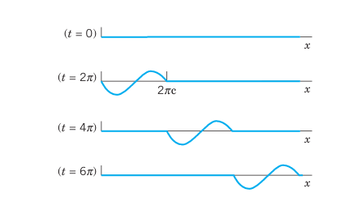
We have reached the end of , in which we concentrated on the most important partial differential equations (PDEs) in physics and engineering. We have also reached the end of on Fourier Analysis and PDEs.
13.20.2 Outlook
We have seen that PDEs underlie the modeling process of various important engineering applications. Indeed, PDEs are the subject of many ongoing research projects. Numerics for PDEs follows in , which are designed to be independent of the other sections on numerics. In the next part, that is, on complex analysis, we turn to an area of a different nature that is also highly important to the engineer. It is of note that includes another approach to the two-dimensional Laplace equation with applications, as shown in .
13.21 PROBLEM SET 12.12
1. Verify the solution in Example 1. What traveling wave do we obtain in Example 1 for a nonterminating sinusoidal motion of the left end starting at \(t=0\)?
2. Sketch a figure similar to Figure 13.32 when \(c=1\) and \(f(t)\) is “triangular,” say, \(f(t) = t\) if \(0 \le t \le 1\), \(f(t) = 2-t\) if \(1 \le t \le 2\), and 0 otherwise.
3. How does the speed of the wave in Example 1 of the text depend on the tension and on the mass of the string?
4–8 SOLVE BY LAPLACE TRANSFORMS
Solve the following problems with \(w(x, t)\) for \(x \ge 0, t \ge 0\):
4. \(w_x + x w_t = x\), \(w(x, 0) = 1\), \(w(0, t) = 1\)
5. \(x w_x + w_t = xt\), \(w(x, 0) = 0\) if \(x \ge 0\), \(w(0, t) = 0\) if \(t \ge 0\)
6. \(w_x + 2x w_t = 2x\), \(w(x, 0) = 1\), \(w(0, t) = 1\)
7. Solve Prob. 5 by separating variables.
8. \(w_{xx} = 100 w_{tt} + 100 w_t + 25w\), \(w(x, 0) = 0\), \(w_t(x, 0) = 0\), \(w(0, t) = \sin t\)
9–12 HEAT PROBLEM
Find the temperature \(w(x, t)\) in a semi-infinite laterally insulated bar extending from \(x = 0\) along the \(x\)-axis to infinity, assuming that the initial temperature is 0, and \(w(0, t) = f(t)\).
9. Set up the model and show that the Laplace transform leads to \[ sW = c^2 \frac{\partial^2 W}{\partial x^2} \quad (W = \mathcal{L}\{w\}) \] and \[ W = F(s) e^{-x\sqrt{s}/c} \quad (F = \mathcal{L}\{f\}). \]
10. Applying the convolution theorem, show that in Prob. 9, \[ w(x, t) = \frac{x}{2c\sqrt{\pi}} \int_0^t f(t-\tau) \tau^{-3/2} e^{-x^2 / (4c^2 \tau)} \, d\tau. \]
11. Let \(w(0, t) = f(t) = u(t)\) (unit step function). Denote the corresponding \(w\) by \(w_0\). Show that then in Prob. 10, \[ w_0(x, t) = 1 - \text{erf}\left( \frac{x}{2c\sqrt{t}} \right) \] with the error function erf as defined in Section 13.12.
12. Duhamel’s formula. Show that in Prob. 11, \(W_0(x, s) = \frac{1}{s} e^{-x\sqrt{s}/c}\) and the convolution theorem gives Duhamel’s formula \[ w(x, t) = \int_0^t f(t-\tau) \frac{\partial w_0}{\partial \tau} \, d\tau. \]
13.22 CHAPTER REVIEW QUESTIONS AND PROBLEMS
1. For what kinds of problems will modeling lead to an ODE? To a PDE?
2. Mention some of the basic physical principles or laws that will give a PDE in modeling.
3. State three or four of the most important PDEs and their main applications.
4. What is “separating variables” in a PDE? When did we apply it twice in succession?
5. What is d’Alembert’s solution method? To what PDE does it apply?
6. What role did Fourier series play in this chapter? Fourier integrals?
7. When and why did Legendre’s equation occur? Bessel’s equation?
8. What are the eigenfunctions and their frequencies of the vibrating string? Of the vibrating membrane?
9. What do you remember about types of PDEs? Normal forms? Why is this important?
10. When did we use polar coordinates? Cylindrical coordinates? Spherical coordinates?
11. Explain mathematically (not physically) why we got exponential functions in separating the heat equation, but not for the wave equation.
12. Why and where did the error function occur?
13. How do problems for the wave equation and the heat equation differ regarding additional conditions?
14. Name and explain the three kinds of boundary conditions for Laplace’s equation.
15. Explain how the Laplace transform applies to PDEs.
16–18 Solve for \(u = u(x, y)\):
16. \(u_{xx} + 25u = 0\)
17. \(u_{yy} + u_y - 6u = 18\)
18. \(u_{xx} + u_x = 0\), \(u(0, y) = f(y)\), \(u_x(0, y) = g(y)\)
19–21 NORMAL FORM
Transform to normal form and solve:
19. \(u_{xy} = u_{yy}\)
20. \(u_{xx} + 6u_{xy} + 9u_{yy} = 0\)
21. \(u_{xx} - 4u_{yy} = 0\)
22–24 VIBRATING STRING
Find and sketch or graph (as in Figure 13.3 in Section 13.4) the deflection \(u(x, t)\) of a vibrating string of length \(\pi\), extending from \(x = 0\) to \(x = \pi\), and \(c^2 = T/\rho = 4\) starting with velocity zero and deflection:
22. \(\sin 4x\)
23. \(\sin^3 x\)
24. \(\frac{1}{2}\pi - |x - \frac{1}{2}\pi|\)
25–27 HEAT
Find the temperature distribution in a laterally insulated thin copper bar (\(c^2 = K / (\sigma \rho) = 1.158\text{ cm}^2/\text{sec}\)) of length 100 cm and constant cross section with endpoints at \(x = 0\) and \(100\) kept at \(0^\circ\text{C}\) and initial temperature:
25. \(\sin 0.01\pi x\)
26. \(50 - |50 - x|\)
27. \(\sin^3 0.01\pi x\)
28–30 ADIABATIC CONDITIONS
Find the temperature distribution in a laterally insulated bar of length \(\pi\) with \(c^2 = 1\) for the adiabatic boundary condition (see Section 13.10) and initial temperature:
28. \(3x^2\)
29. \(100 \cos 2x\)
30. \(2\pi - 4|x - \frac{1}{2}\pi|\)
31–32 TEMPERATURE IN A PLATE
31. Let \(f(x, y) = u(x, y, 0)\) be the initial temperature in a thin square plate of side \(\pi\) with edges kept at \(0^\circ\text{C}\) and faces perfectly insulated. Separating variables, obtain from \(u_t = c^2 \nabla^2 u\) the solution \[ u(x, y, t) = \sum_{m=1}^{\infty} \sum_{n=1}^{\infty} B_{mn} \sin mx \sin ny e^{-c^2(m^2+n^2)t} \] where \[ B_{mn} = \frac{4}{\pi^2} \int_0^\pi \int_0^\pi f(x, y) \sin mx \sin ny \, dx \, dy. \]
32. Find the temperature in Prob. 31 if \(f(x, y) = x(\pi-x)y(\pi-y)\).
33–37 MEMBRANES
Show that the following membranes of area 1 with \(c^2 = 1\) have the frequencies of the fundamental mode as given (4-decimal values). Compare.
33. Circle: \(\alpha_1 / (2\sqrt{\pi}) \approx 0.6784\)
34. Square: \(\sqrt{2}/2 \approx 0.7071\)
35. Rectangle with sides \(1 : 2\): \(\sqrt{5} / (2\sqrt{2}) \approx 0.7906\)
36. Semicircle: \(3.832 / (2\sqrt{2\pi}) \approx 0.7643\)
37. Quadrant of circle: \(\alpha_{21} / (4\sqrt{\pi}) \approx 0.7244\) (\(\alpha_{21} \approx 5.13562\) = first positive zero of \(J_2\))
38–40 ELECTROSTATIC POTENTIAL
Find the potential in the following charge-free regions:
38. Between two concentric spheres of radii \(r_0\) and \(r_1\) kept at potentials \(u_0\) and \(u_1\), respectively.
39. Between two coaxial circular cylinders of radii \(r_0\) and \(r_1\) kept at the potentials \(u_0\) and \(u_1\), respectively. Compare with Prob. 38.
40. In the interior of a sphere of radius 1 kept at the potential \(f(\phi) = \cos 3\phi + 3 \cos \phi\) (referred to our usual spherical coordinates).
13.23 SUMMARY OF CHAPTER
Whereas ODEs () serve as models of problems involving only one independent variable, problems involving two or more independent variables (space variables or time \(t\) and one or several space variables) lead to PDEs. This accounts for the enormous importance of PDEs to the engineer and physicist. Most important are:
\[ \frac{\partial^2 u}{\partial t^2} = c^2 \frac{\partial^2 u}{\partial x^2} \quad \text{One-dimensional wave equation (<!-- TODO: replace Secs. 12.2–12.4 with actual cross-reference label -->)} \tag{13.176}\] \[ \frac{\partial^2 u}{\partial t^2} = c^2 \left( \frac{\partial^2 u}{\partial x^2} + \frac{\partial^2 u}{\partial y^2} \right) \quad \text{Two-dimensional wave equation (<!-- TODO: replace Secs. 12.8–12.10 with actual cross-reference label -->)} \tag{13.177}\] \[ \frac{\partial u}{\partial t} = c^2 \frac{\partial^2 u}{\partial x^2} \quad \text{One-dimensional heat equation (<!-- TODO: replace Secs. 12.5, 12.6, 12.7 with actual cross-reference label -->)} \tag{13.178}\] \[ \nabla^2 u = \frac{\partial^2 u}{\partial x^2} + \frac{\partial^2 u}{\partial y^2} = 0 \quad \text{Two-dimensional Laplace equation (<!-- TODO: replace Secs. 12.6, 12.10 with actual cross-reference label -->)} \tag{13.179}\] \[ \nabla^2 u = \frac{\partial^2 u}{\partial x^2} + \frac{\partial^2 u}{\partial y^2} + \frac{\partial^2 u}{\partial z^2} = 0 \quad \text{Three-dimensional Laplace equation (@sec-laplaces-equation-cylindrical-spherical-coordinates).} \tag{13.180}\]
Equations (Equation 13.176) and (Equation 13.177) are hyperbolic, (Equation 13.178) is parabolic, (Equation 13.179) and (Equation 13.180) are elliptic.
In practice, one is interested in obtaining the solution of such an equation in a given region satisfying given additional conditions, such as initial conditions (conditions at time \(t=0\)) or boundary conditions (prescribed values of the solution \(u\) or some of its derivatives on the boundary surface \(S\), or boundary curve \(C\), of the region) or both. For (Equation 13.176) and (Equation 13.177) one prescribes two initial conditions (initial displacement and initial velocity). For (Equation 13.178) one prescribes the initial temperature distribution. For (Equation 13.179) and (Equation 13.180) one prescribes a boundary condition and calls the resulting problem a:
- Dirichlet problem if \(u\) is prescribed on \(S\),
- Neumann problem if \(u_n = \partial u / \partial n\) is prescribed on \(S\),
- Mixed problem if \(u\) is prescribed on one part of \(S\) and \(u_n\) on the other.
A general method for solving such problems is the method of separating variables or product method, in which one assumes solutions in the form of products of functions each depending on one variable only. Thus equation (Equation 13.176) is solved by setting \(u(x, t) = F(x)G(t)\); see Section 13.4; similarly for (Equation 13.178) (see Section 13.9). Substitution into the given equation yields ordinary differential equations for \(F\) and \(G\), and from these one gets infinitely many solutions \(F = F_n\) and \(G = G_n\) such that the corresponding functions \[ u_n(x, t) = F_n(x)G_n(t) \] are solutions of the PDE satisfying the given boundary conditions. These are the eigenfunctions of the problem, and the corresponding eigenvalues determine the frequency of the vibration (or the rapidity of the decrease of temperature in the case of the heat equation, etc.). To satisfy also the initial condition (or conditions), one must consider infinite series of the \(u_n\), whose coefficients turn out to be the Fourier coefficients of the functions \(f\) and \(g\) representing the given initial conditions (Section 13.4, Section 13.9). Hence Fourier series (and Fourier integrals) are of basic importance here (Section 13.4, Section 13.9, Section 13.11, Section 13.14).
Steady-state problems are problems in which the solution does not depend on time \(t\). For these, the heat equation \(u_t = c^2 \nabla^2 u\) becomes the Laplace equation.
Before solving an initial or boundary value problem, one often transforms the PDE into coordinates in which the boundary of the region considered is given by simple formulas. Thus in polar coordinates given by \(x = r \cos \theta, y = r \sin \theta\), the Laplacian becomes (Section 13.16) \[ \nabla^2 u = \frac{\partial^2 u}{\partial r^2} + \frac{1}{r} \frac{\partial u}{\partial r} + \frac{1}{r^2} \frac{\partial^2 u}{\partial \theta^2}; \] for cylindrical and spherical coordinates see Section 13.18. If one now separates the variables, one gets Bessel’s equation (circular membrane, Section 13.16) and Legendre’s equation (spherical potential problem, Section 13.18).
JEAN LE ROND D’ALEMBERT (1717–1783), French mathematician, also known for his important work in mechanics. We mention that the general theory of PDEs provides a systematic way for finding the transformation (Equation 13.33) that simplifies (Equation 13.32). See Ref. [C8] in .↩︎